The Gviz User Guide
Florian Hahne
Novartis Institute for Biomedical Research, Basel, Switzerlandflorian.hahne@novartis.com
Robert Ivánek
Department of Biomedicine, University of Basel, Basel, Switzerlandrobert.ivanek@unibas.ch Source:
vignettes/Gviz.Rmd
Gviz.RmdLast edited: 19 May 2020
Introduction
In order to make sense of genomic data one often aims to plot such data in a genome browser, along with a variety of genomic annotation features, such as gene or transcript models, CpG island, repeat regions, and so on. These features may either be extracted from public data bases like ENSEMBL or UCSC, or they may be generated or curated in-house. Many of the currently available genome browsers do a reasonable job in displaying genome annotation data, and there are options to connect to some of them from within R (e.g., using the rtracklayer package). However, none of these solutions offer the flexibility of the full R graphics system to display large numeric data in a multitude of different ways. The Gviz package (Hahne and Ivanek 2016) aims to close this gap by providing a structured visualization framework to plot any type of data along genomic coordinates. It is loosely based on the GenomeGraphs package by Steffen Durinck and James Bullard, however the complete class hierarchy as well as all the plotting methods have been restructured in order to increase performance and flexibility. All plotting is done using the grid graphics system, and several specialized annotation classes allow to integrate publicly available genomic annotation data from sources like UCSC or ENSEMBL.
Basic Features
The fundamental concept behind the Gviz package is similar to the approach taken by most genome browsers, in that individual types of genomic features or data are represented by separate tracks. Within the package, each track constitutes a single object inheriting from class GdObject, and there are constructor functions as well as a broad range of methods to interact with and to plot these tracks. When combining multiple objects, the individual tracks will always share the same genomic coordinate system, thus taking the burden of aligning the plot elements from the user.
It is worth mentioning that, at a given time, tracks in the sense of the Gviz package are only defined for a single chromosome on a specific genome, at least for the duration of a given plotting operation. You will later see that a track may still contain information for multiple chromosomes, however most of this is hidden except for the currently active chromosome, and the user will have to explicitly switch the chromosome to access the inactive parts. While the package in principle imposes no fixed structure on the chromosome or on the genome names, it makes sense to stick to a standardized naming paradigm, in particular when fetching additional annotation information from online resources. By default this is enforced by a global option ucscChromosomeNames, which is set during package loading and which causes the package to check all supplied chromosome names for validity in the sense of the UCSC definition (chromosomes have to start with the chr string). You may decide to turn this feature off by calling options(ucscChromosomeNames=FALSE). For the remainder of this vignette however, we will make use of the UCSC genome and chromosome identifiers, e.g., the chr7 chromosome on the mouse mm9 genome.
The different track classes will be described in more detail in the @ref(track-classes) section further below. For now, let’s just take a look at a typical Gviz session to get an idea of what this is all about. We begin our presentation of the available functionality by loading the package:
The most simple genomic features consist of start and stop coordinates, possibly overlapping each other. CpG islands or microarray probes are real life examples for this class of features. In the Bioconductor world those are most often represented as run-length encoded vectors, for instance in the IRanges and GRanges classes. To seamlessly integrate with other Bioconductor packages, we can use the same data structures to generate our track objects. A sample set of CpG island coordinates has been saved in the cpgIslands object and we can use that for our first annotation track object. The constructor function AnnotationTrack is a convenient helper to create the object.
library(GenomicRanges)
data(cpgIslands)
class(cpgIslands)
## [1] "GRanges"
## attr(,"package")
## [1] "GenomicRanges"
chr <- as.character(unique(seqnames(cpgIslands)))
gen <- genome(cpgIslands)
atrack <- AnnotationTrack(cpgIslands, name = "CpG")Please note that the AnnotationTrack constructor (as most constructors in this package) is fairly flexible and can accommodate many different types of inputs. For instance, the start and end coordinates of the annotation features could be passed in as individual arguments start and end, as a data.frame or even as an IRanges or GRangesList object. Furthermore, a whole bunch of coercion methods are available for those package users that prefer the more traditional R coding paradigm, and they should allow operations along the lines of as(obj, 'AnnotationTrack'). You may want to consult the class’ manual page for more information, or take a look at the @ref(bioconductor-integration) section for a listing of the most common data structures and their respective counterparts in the Gviz package.
With our first track object being created we may now proceed to the plotting. There is a single function plotTracks that handles all of this. As we will learn in the remainder of this vignette, plotTracks is quite powerful and has a number of very useful additional arguments. For now we will keep things very simple and just plot the single CpG islands annotation track.
plotTracks(atrack)As you can see, the resulting graph is not particularly spectacular. There is a title region showing the track’s name on a gray background on the left side of the plot and a data region showing the seven individual CpG islands on the right. This structure is similar for all the available track objects classes and it somewhat mimics the layout of the popular UCSC Genome Browser. If you are not happy with the default settings, the Gviz package offers a multitude of options to fine-tune the track appearance, which will be shown in the @ref(plotting-parameters) section.
Apart from the relative distance of the CpG islands, this visualization does not tell us much. One obvious next step would be to indicate the genomic coordinates we are currently looking at in order to provide some reference. For this purpose, the Gviz package offers the GenomeAxisTrack class. Objects from the class can be created using the constructor function of the same name.
gtrack <- GenomeAxisTrack()Since a GenomeAxisTrack object is always relative to the other tracks that are plotted, there is little need for additional arguments. Essentially, the object just tells the plotTracks function to add a genomic axis to the plot. Nonetheless, it represent a separate annotation track just as the CpG island track does. We can pass this additional track on to plotTracks in the form of a list.
plotTracks(list(gtrack, atrack))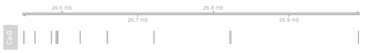
You may have realized that the genomic axis does not take up half of the available vertical plotting space, but only uses the space necessary to fit the axis and labels. Also the title region for this track is empty. In general, the Gviz package tries to find reasonable defaults for all the parameters controlling the look and feel of a plots so that appealing visualizations can be created without too much tinkering. However, all features on the plot including the relative track sizes can also be adjusted manually.
As mentioned before in the beginning of this vignette, a plotted track is always defined for exactly one chromosome on a particular genome. We can include this information in our plot by means of a chromosome ideogram. An ideogram is a simplified visual representation of a chromosome, with the different chromosomal staining bands indicated by color, and the centromere (if present) indicated by the shape. The necessary information to produce this visualization is stored in online data repositories, for instance at UCSC. The Gviz package offers very convenient connections to some of these repositories, and the IdeogramTrack constructor function is one example for such a connection. With just the information about a valid UCSC genome and chromosome, we can directly fetch the chromosome ideogram information and construct a dedicated track object that can be visualized by plotTracks. Please not that you will need an established internet connection for this to work, and that fetching data from UCSC can take quite a long time, depending on the server load. The Gviz package tries to cache as much data as possible to reduce the bandwidth in future queries.
itrack <- IdeogramTrack(genome = gen, chromosome = chr)Similar to the previous examples, we stick the additional track object into a list in order to plot it.
plotTracks(list(itrack, gtrack, atrack))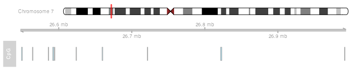
Ideogram tracks are the one exception in all of Gviz’s track objects in the sense that they are not really displayed on the same coordinate system like all the other tracks. Instead, the current genomic location is indicated on the chromosome by a red box (or, as in this case, a red line if the width is too small to fit a box).
So far we have only looked at very basic annotation features and how to give a point of reference to our plots. Naturally, we also want to be able to handle more complex genomic features, such as gene models. One potential use case would be to utilize gene model information from an existing local source. Alternatively, we could download such data from one of the available online resources like UCSC or ENSEBML, and there are constructor functions to handle these tasks. For this example we are going to load gene model data from a stored data.frame. The track class of choice here is a GeneRegionTrack object, which can be created via the constructor function of the same name. Similar to the AnnotationTrack constructor there are multiple possible ways to pass in the data.
data(geneModels)
grtrack <- GeneRegionTrack(geneModels, genome = gen,
chromosome = chr, name = "Gene Model")
plotTracks(list(itrack, gtrack, atrack, grtrack))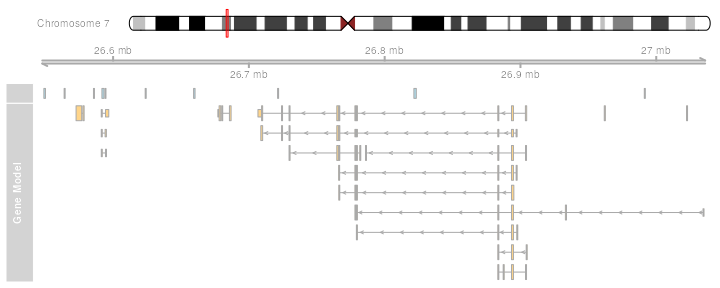
In all those previous examples the plotted genomic range has been determined automatically from the input tracks. Unless told otherwise, the package will always display the region from the leftmost item to the rightmost item in any of the tracks. Of course such a static view on a chromosomal region is of rather limited use. We often want to zoom in or out on a particular plotting region to see more details or to get a broader overview. To that end, plotTracks supports the from and to arguments that let us choose an arbitrary genomic range to plot.
plotTracks(list(itrack, gtrack, atrack, grtrack),
from = 26700000, to = 26750000)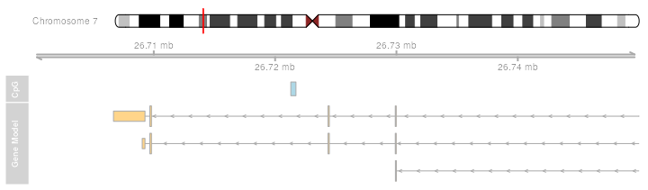
Another pair of arguments that controls the zoom state are extend.left and extend.right. Rather than from and to, those arguments are relative to the currently displayed ranges, and can be used to quickly extend the view on one or both ends of the plot. In addition to positive or negative absolute integer values one can also provide a float value between -1 and 1 which will be interpreted as a zoom factor, i.e., a value of 0.5 will cause zooming in to half the currently displayed range.
plotTracks(list(itrack, gtrack, atrack, grtrack),
extend.left = 0.5, extend.right = 1000000)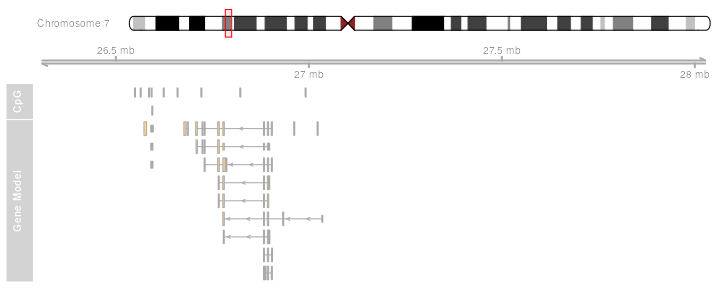
You may have noticed that the layout of the gene model track has changed depending on the zoom level. This is a feature of the Gviz package, which automatically tries to find the optimal visualization settings to make best use of the available space. At the same time, when features on a track are too close together to be plotted as separate items with the current device resolution, the package will try to reasonably merge them in order to avoid overplotting.
Often individual ranges on a plot tend to grow quite narrow, in particular when zooming far out, and a couple of tweaks become helpful in order to get nice plots, for instance to drop the bounding borders of the exons.
plotTracks(list(itrack, gtrack, atrack, grtrack),
extend.left = 0.5, extend.right = 1000000, col = NULL)When zooming further in it may become interesting to take a look at the actual genomic sequence at a given position, and the Gviz package provides the track class SequenceTrack that let’s you do just that. Among several other options it can draw the necessary sequence information from one of the BSgenome packages.
library(BSgenome.Hsapiens.UCSC.hg19)
strack <- SequenceTrack(Hsapiens, chromosome = chr)
plotTracks(list(itrack, gtrack, atrack, grtrack, strack),
from = 26591822, to = 26591852, cex = 0.8)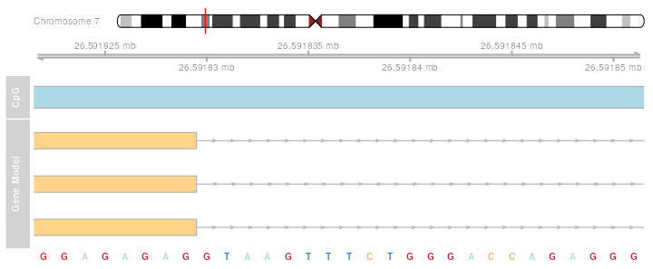
So far we have replicated the features of a whole bunch of other genome browser tools out there. The real power of the package comes with a rather general track type, the DataTrack. DataTrack object are essentially run-length encoded numeric vectors or matrices, and we can use them to add all sorts of numeric data to our genomic coordinate plots. There are a whole bunch of different visualization options for these tracks, from dot plots to histograms to box-and-whisker plots. The individual rows in a numeric matrix are considered to be different data groups or samples, and the columns are the raster intervals in the genomic coordinates. Of course, the data points (or rather the data ranges) do not have to be evenly spaced; each column is associated with a particular genomic location. For demonstration purposes we can create a simple DataTrack object from randomly sampled data.
set.seed(255)
lim <- c(26700000, 26750000)
coords <- sort(c(lim[1],
sample(seq(from = lim[1], to = lim[2]), 99),
lim[2]))
dat <- runif(100, min = -10, max = 10)
dtrack <- DataTrack(data = dat, start = coords[-length(coords)],
end = coords[-1], chromosome = chr, genome = gen,
name = "Uniform")
plotTracks(list(itrack, gtrack, atrack, grtrack, dtrack),
from = lim[1], to = lim[2])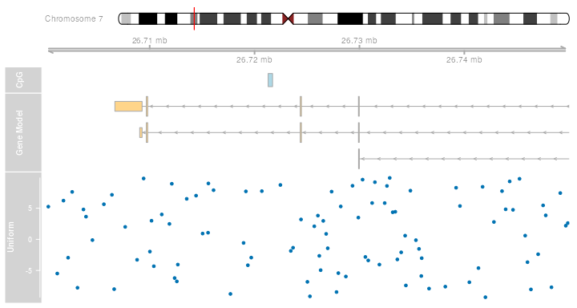
The first thing to notice is that the title panel to the right of the plot now contains a y-axis indicating the range of the displayed data. The default plotting type for numeric vectors is a simple dot plot. This is by far not the only visualization option, and in a sense it is wasting quite a lot of information because the run-length encoded ranges are not immediately apparent. We can change the plot type by supplying the type argument to plotTracks. A complete description of the available plotting options is given in section @ref(track-classes), and a more detailed treatment of the so-called ‘display parameters’ that control the look and feel of a track is given in the @ref(plotting-parameters) section.
plotTracks(list(itrack, gtrack, atrack, grtrack, dtrack),
from = lim[1], to = lim[2], type = "histogram")As we can see, the data values in the numeric vector are indeed matched to the genomic coordinates of the DataTrack object. Such a visualization can be particularly helpful when displaying for instance the coverage of NGS reads along a chromosome, or to show the measurement values of mapped probes from a micro array experiment.
This concludes our first introduction into the Gviz package. The remainder of this vignette will deal in much more depth with the different concepts and the various track classes and plotting options.
Plotting parameters
Setting parameters
Although not implicitly mentioned before, we have already made use of the plotting parameter facilities in the Gviz package, or, as we will call them from now on, the ‘display parameters’. Display parameters are properties of individual track objects (i.e., of any object inheriting from the base GdObject class). They can either be set during object instantiation as additional arguments to the constructor functions or, for existing track objects, using the displayPars replacement method. In the former case, all named arguments that can not be matched to any of the constructor’s formal arguments are considered to be display parameters, regardless of their type or whether they are defined for a particular track class or not. The following code example rebuilds our GeneRegionTrack object with a bunch of display parameters and demonstrates the use of the displayPars accessor and replacement methods.
grtrack <- GeneRegionTrack(geneModels, genome = gen, chromosome = chr,
name = "Gene Model",
transcriptAnnotation = "symbol",
background.title = "brown")
head(displayPars(grtrack))
## $arrowHeadWidth
## [1] 10
##
## $arrowHeadMaxWidth
## [1] 20
##
## $col
## [1] "darkgray"
##
## $collapseTranscripts
## [1] FALSE
##
## $exonAnnotation
## NULL
##
## $fill
## [1] "#FFD58A"
displayPars(grtrack) <- list(background.panel = "#FFFEDB", col = NULL)
head(displayPars(grtrack))
## $arrowHeadWidth
## [1] 10
##
## $arrowHeadMaxWidth
## [1] 20
##
## $col
## NULL
##
## $collapseTranscripts
## [1] FALSE
##
## $exonAnnotation
## NULL
##
## $fill
## [1] "#FFD58A"
plotTracks(list(itrack, gtrack, atrack, grtrack))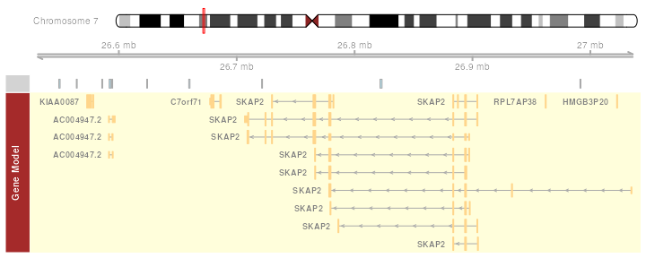
For our gene model track we have now added the gene symbols of the different transcripts to the plot, removed the gray border around the individual exons models, and changed the background color of both the title and the data panel to a yellowish hue. There is a third option to set display parameters for a single plotting operation (rather than the permanent setting in the track object) by passing in additional arguments to the plotTracks function. We have already made use of this feature, for instance in the previous data plotting type example. It is worth mentioning that all display parameters which are passed along with the plotTracks function apply to all track objects in the plot. For some objects classes a particular display parameter may not make any sense, and in that case it is simply ignored. Also, the settings only apply for one single plotting operation and will not be retained in the plotted track objects. They do however get precedence over the object-internal parameters. The following line of code exemplifies this behavior.
plotTracks(list(itrack, gtrack, atrack, grtrack),
background.panel = "#FFFEDB", background.title = "darkblue")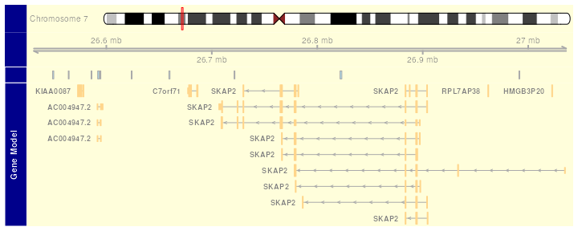
In order to make full use of the flexible parameter system we need to know which display parameters control which aspect of which track class. The obvious source for this information are the man pages of the respective track classes, which list all available parameters along with a short description of their effect and default values in the Display Parameters section. Alternatively, we can use the availableDisplayPars function, which prints out the available parameters for a class as well as their default values in a list-like structure. The single argument to the function is either a class name of a track object class, or the object itself, in which case its class is automatically detected.
dp <- availableDisplayPars(grtrack)
tail(dp)
##
## The following display parameters are available for 'GeneRegionTrack' objects:
## (see ? GeneRegionTrack for details on their usage)
##
## showAxis (inherited from class 'GdObject'): TRUE
## showExonId: NULL
## showFeatureId (inherited from class 'AnnotationTrack'): FALSE
## showId (inherited from class 'AnnotationTrack'): FALSE
## showOverplotting (inherited from class 'AnnotationTrack'): FALSE
## showTitle (inherited from class 'GdObject'): TRUE
## size (inherited from class 'GdObject'): 1
## stackHeight (inherited from class 'StackedTrack'): 0.75
## thinBoxFeature: utr ncRNA utr3 utr5 3UTR 5UTR miRNA lincRNA three_prime_UTR five_prime_UTR
## transcriptAnnotation: NULL
## v (inherited from class 'GdObject'): -1As we can see, display parameters can be inherited from parent classes. For the regular user this is not important at all, however it nicely exemplifies the structure of the class hierarchy in the Gviz package.
Schemes
Users might find themselves changing the same parameters over and over again, and it would make sense to register these modifications in a central location once and for all. To this end the Gviz package supports display parameter schemes. A scheme is essentially just a bunch of nested named lists, where the names on the first level of nesting should correspond to track class names, and the names on the second level to the display parameters to set. The currently active scheme can be changed by setting the global option Gviz.scheme, and a new scheme can be registered by using the addScheme function, providing both the list and the name for the new scheme. The getScheme function is useful to get the current scheme as a list structure, for instance to use as a skeleton for your own custom scheme.
getOption("Gviz.scheme")
## [1] "default"
scheme <- getScheme()
scheme$GeneRegionTrack$fill <- "salmon"
scheme$GeneRegionTrack$col <- NULL
scheme$GeneRegionTrack$transcriptAnnotation <- "transcript"
addScheme(scheme, "myScheme")
options(Gviz.scheme = "myScheme")
grtrack <- GeneRegionTrack(geneModels, genome = gen,
chromosome = chr, name = "Gene Model")
plotTracks(grtrack)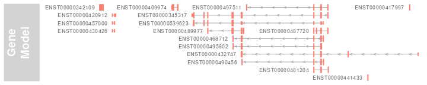
options(Gviz.scheme="default")
grtrack <- GeneRegionTrack(geneModels, genome = gen, chromosome = chr,
name = "Gene Model",
transcriptAnnotation = "symbol")In order to make these settings persistent across R sessions one can create one or several schemes in the global environment in the special object .GvizSchemes, for instance by putting the necessary code in the .Rprofile file. This object needs to be a named list of schemes, and it will be collected when the Gviz package loads. Its content is then automatically added to the collection of available schemes. The following pseudo-code exemplifies this and could go into an .Rprofile file.
.GvizSchemes <- list(myScheme = list(
GeneRegionTrack=list(fill = "salmon", col = NULL,
transcriptAnnotation = "transcript")))Please note that because display parameters are stored with the track objects, a scheme change only has an effect on those objects that are created after the change has taken place.
Plotting direction
By default all tracks will be plotted in a 5’ -> 3’ direction. It sometimes can be useful to actually show the data relative to the opposite strand. To this end one can use the reverseStrand display parameter, which does just what its name suggests. Since the combination of forward and reverse stranded tracks on a single plot does not make too much sense, one should usually set this as a global display parameter in the plotTracks function. The function will however cast a warning if a mixture of forward and reverse strand tracks has been passed in for plotting.
plotTracks(list(itrack, gtrack, atrack, grtrack), reverseStrand = TRUE)
As you can see, the fact that the data has been plotted on the reverse strand is also reflected in the GenomeAxis track.
Track classes
In this section we will highlight all of the available annotation track classes in the Gviz package. For the complete reference of all the nuts and bolts, including all the available methods, please see the respective class man pages. We will try to keep this vignette up to date, but in cases of discrepancies between here and the man pages you should assume the latter to be correct.
GenomeAxisTrack
GenomeAxisTrack objects can be used to add some reference to the currently displayed genomic location to a Gviz plot. In their most basic form they are really just a horizontal axis with genomic coordinate tick-marks. Using the GenomeAxisTrack constructor function is the recommended way to instantiate objects from the class. There is no need to know in advance about a particular genomic location when constructing the object. Instead, the displayed coordinates will be determined from the context, e.g., from the from and to arguments of the plotTracks function, or, when plotted together with other track objects, from their genomic locations.
axisTrack <- GenomeAxisTrack()
plotTracks(axisTrack, from = 1e6, to = 9e6)As an optional feature one can highlight particular regions on the axis, for instance to indicated stretches of N nucleotides or gaps in genomic alignments. Such regions have to be supplied to the optional range argument of the constructor function as either an GRanges or an IRanges object.
axisTrack <- GenomeAxisTrack(range=IRanges(start = c(2e6, 4e6),
end = c(3e6, 7e6),
names = rep("N-stretch", 2)))
plotTracks(axisTrack, from = 1e6, to = 9e6)If names have been supplied with the range argument, those can also be added to the plot.
plotTracks(axisTrack, from = 1e6, to = 9e6, showId = TRUE)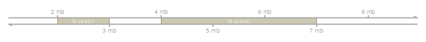
Display parameters for GenomeAxisTrack objects
There are a whole bunch of display parameters to alter the appearance of GenomeAxisTrack plots. For instance, one could add directional indicators to the axis using the add53 and add35 parameters.
plotTracks(axisTrack, from = 1e6, to = 9e6, add53 = TRUE, add35 = TRUE)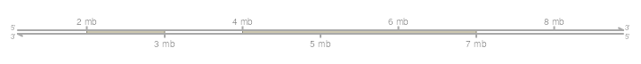
Sometimes the resolution of the tick marks is not sufficient, in which case the littleTicks argument can be used to have a more fine-grained axis annotation.
plotTracks(axisTrack, from = 1e6, to = 9e6, add53 = TRUE,
add35 = TRUE, littleTicks = TRUE)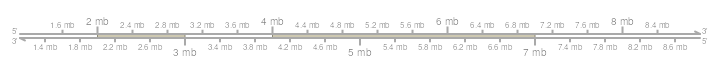
The Gviz package tries to come up with reasonable defaults for the axis annotation. In our previous example, the genomic coordinates are indicated in megabases. We can control this via the exponent parameter, which takes an integer value greater then zero. The location of the tick marks are displayed as a fraction of \(10^{exponent}\).
plotTracks(axisTrack, from = 1e6, to = 9e6, exponent = 4)Another useful parameter, labelPos controls the arrangement of the tick marks. It takes one of the values alternating, revAlternating, above or below. For instance we could align all tick marks underneath the axis.
plotTracks(axisTrack, from = 1e6, to = 9e6, labelPos = "below")Sometimes a full-blown axis is just too much, and all we really need in the plot is a small scale indicator. We can change the appearance of the GenomeAxisTrack object to such a limited representation by setting the scale display parameter. Typically, this will be a numeric value between 0 and 1, which is interpreted as the fraction of the plotting region used for the scale. The plotting method will apply some rounding to come up with reasonable and human-readable values. For even more control we can pass in a value larger than 1, which is considered to be an absolute range length. In this case, the user is responsible for the scale to actually fit in the current plotting range.
plotTracks(axisTrack, from = 1e6, to = 9e6, scale = 0.5)We still have control over the placement of the scale label via the labelPos, parameter, which now takes the values above, below and beside.
plotTracks(axisTrack, from = 1e6, to = 9e6, scale = 0.5,
labelPos = "below")For a complete listing of all the available display parameters please see the table below or the man page of the GenomeAxisTrack class by typing in ?GenomeAxisTrack on the R command line.
| Display Parameter | Description |
|---|---|
| add35 | Logical scalar. Add 3’ to 5’ direction indicators. |
| add53 | Logical scalar. Add 5’ to 3’ direction indicators. |
| cex | Numeric scalar. The overall font expansion factor for the axis annotation text. |
| cex.id | Numeric scalar. The text size for the optional range annotation. |
| col | Character scalar. The color for the axis lines and tickmarks. |
| col.border.title | Integer or character scalar. The border color for the title panels. |
| col.id | Character scalar. The text color for the optional range annotation. |
| col.range | Character scalar. The border color for highlighted regions on the axis. |
| distFromAxis | Numeric scalar. Control the distance of the axis annotation from the tick marks. |
| exponent | Numeric scalar. The exponent for the axis coordinates, e.g., 3 means mb, 6 means gb, etc. The default is to automatically determine the optimal exponent. |
| fill.range | Character scalar. The fill color for highlighted regions on the axis. |
| fontcolor | Character scalar. The font color for the axis annotation text. |
| fontsize | Numeric scalar. Font size for the axis annotation text in points. |
| labelPos | Character vector, one in “alternating”, “revAlternating”, “above” or “below”. The vertical positioning of the axis labels. If scale is not NULL, the possible values are “above”, “below” and “beside”. |
| littleTicks | Logical scalar. Add more fine-grained tick marks. |
| lwd | Numeric scalar. The line width for the axis elementes. |
| lwd.border.title | Integer scalar. The border width for the title panels. |
| scale | Numeric scalar. If not NULL a small scale is drawn instead of the full axis, if the value is between 0 and 1 it is interpreted as a fraction of the current plotting region, otherwise as an absolute length value in genomic coordinates. |
| showId | Logical scalar. Show the optional range highlighting annotation. |
| ticksAt | Numeric scalar. The exact x-position for tickmarks (in base-pairs). |
IdeogramTrack
While a genomic axis provides helpful points of reference to a plot, it is sometimes important to show the currently displayed region in the broader context of the whole chromosome. Are we looking at distal regions, or somewhere close to the centromere? And how much of the complete chromosome is covered in our plot. To that end the Gviz package defines the IdeogramTrack class, which is an idealized representation of a single chromosome. When plotted, these track objects will always show the whole chromosome, regardless of the selected genomic region. However, the displayed coordinates are indicated by a box that sits on the ideogram image. The chromosomal data necessary to draw the ideogram is not part of the Gviz package itself, instead it is downloaded from an online source (UCSC). Thus it is important to use both chromosome and genome names that are recognizable in the UCSC data base when dealing with IdeogramTrack objects. You might want to consult the UCSC webpage or use the ucscGenomes function in the rtracklayer package for a listing of available genomes.
Assuming the chromosome data are available online, a simple call to the IdeogramTrack constructor function including the desired genome and chromosome name are enough to instantiate the object. Since the connection to UCSC can be slow, the package tries to cache data that has already been downloaded for the duration of the R session. If needed, the user can manually clear the cache by calling the clearSessionCache function. Of course it is also possible to construct IdeogramTrack objects from local data. Please see the class’ man page for details.
ideoTrack <- IdeogramTrack(genome = "hg19", chromosome = "chrX")
plotTracks(ideoTrack, from = 85e6, to = 129e6)We can turn off the explicit plotting of the chromosome name by setting the showId display parameter to FALSE.
plotTracks(ideoTrack, from = 85e6, to = 129e6, showId = FALSE)The chromosome bands in the ideogram come with a unique identifier, and we can add this information to the plot, at least for those bands that are wide enough to accommodate the text.
plotTracks(ideoTrack, from = 85e6, to = 129e6, showId = FALSE,
showBandId = TRUE, cex.bands = 0.5)We can also change the shape of the centromere to “circle” instead of default “triangle”.
plotTracks(ideoTrack, from = 85e6, to = 129e6, showId = FALSE,
centromereShape = "circle")Display parameters for IdeogramTrack objects
For a complete listing of all the available display parameters please see the table below or the man page of the IdeogramTrack class by typing in ?IdeogramTrack on the R command line.
| Display Parameter | Description |
|---|---|
| bevel | Numeric scalar, between 0 and 1. The level of smoothness for the two ends of the ideogram. |
| centromereShape | Character scalar. The shape of the centromere. Only “triangle” or “circle” is accepted. Default to “triangle” |
| cex | Numeric scalar. The overall font expansion factor for the chromosome name text. |
| cex.bands | Numeric scalar. The font expansion factor for the chromosome band identifier text. |
| col | Character scalar. The border color used for the highlighting of the currently displayed genomic region. |
| col.border.title | Integer or character scalar. The border color for the title panels. |
| fill | Character scalar. The fill color used for the highlighting of the currently displayed genomic region. |
| fontcolor | Character scalar. The font color for the chromosome name text. |
| fontface | Character scalar. The font face for the chromosome name text. |
| fontfamily | Character scalar. The font family for the chromosome name text. |
| fontsize | Numeric scalar. The font size for the chromosome name text. |
| lty | Character or integer scalar. The line type used for the highlighting of the currently displayed genomic region. |
| lwd | Numeric scalar. The line width used for the highlighting of the currently displayed genomic region. |
| lwd.border.title | Integer scalar. The border width for the title panels. |
| outline | Logical scalar. Add borders to the individual chromosome staining bands. |
| showBandId | Logical scalar. Show the identifier for the chromosome bands if there is space for it. |
| showId | Logical scalar. Indicate the chromosome name next to the ideogram. |
DataTrack
Probably the most powerful of all the track classes in the Gviz package are DataTracks. Essentially they constitute run-length encoded numeric vectors or matrices, meaning that one or several numeric values are associated to a particular genomic coordinate range. These ranges may even be overlapping, for instance when looking at results from a running window operation. There can be multiple samples in a single data set, in which case the ranges are associated to the columns of a numeric matrix rather than a numeric vector, and the plotting method provides tools to incorporate sample group information. Thus the starting point for creating DataTrack objects will always be a set of ranges, either in the form of an IRanges or GRanges object, or individually as start and end coordinates or widths. The second ingredient is a numeric vector of the same length as the number of ranges, or a numeric matrix with the same number of columns. Those may even already be part of the input GRanges object as elemenMetadata values. For a complete description of all the possible inputs please see the class’ online documentation. We can pass all this information to the DataTrack constructor function to instantiate an object. We will load our sample data from an GRanges object that comes as part of the Gviz package.
data(twoGroups)
dTrack <- DataTrack(twoGroups, name = "uniform")
plotTracks(dTrack)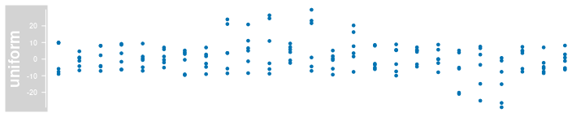
The default visualization for our very simplistic sample DataTrack is a rather uninspiring dot plot. The track comes with a scale to indicate the range of the numeric values on the y-axis, apart from that it looks very much like the previous examples. A whole battery of display parameters is to our disposal to control the track’s look and feel. The most important one is the type parameter. It determines the type of plot to use and takes one or several of the following values:
| Value | Type |
|---|---|
| p | dot plot |
| l | lines plot |
| b | dot and lines plot |
| a | lines plot of average (i.e., mean) values |
| s | stair steps (horizontal first) |
| S | stair steps (vertical first) |
| g | add grid lines |
| r | add linear regression line |
| h | histogram lines |
| confint | confidence intervals for average values |
| smooth | add loess curve |
| histogram | histogram (bar width equal to range with) |
| mountain | ‘mountain-type’ plot relative to a baseline |
| polygon | ‘polygon-type’ plot relative to a baseline |
| boxplot | box and whisker plot |
| gradient | false color image of the summarized values |
| heatmap | false color image of the individual values |
| horizon | Horizon plot indicating magnitude and direction of a change relative to a baseline |
Displayed below are the same sample data as before but plotted with the different type settings:1
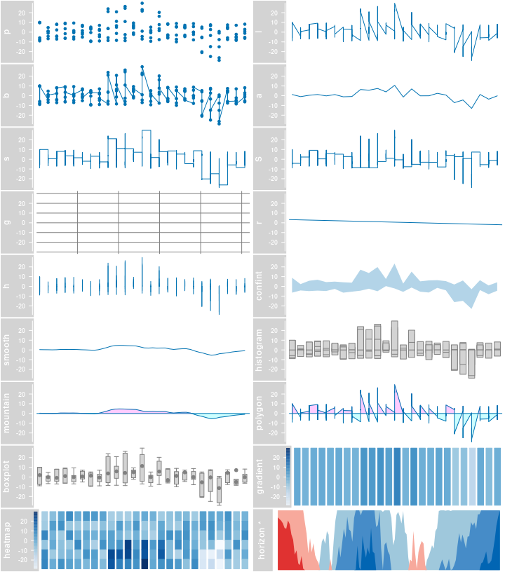
data while others are clearly designed for multivariate inputs. The a type for instance averages the values at each genomic location before plotting the derived values as a line. The decision for a particular plot type is totally up to the user, and one could even overlay multiple types by supplying a character vector rather than a character scalar as the type argument. For example, this will combine a boxplot with an average line and a data grid.
plotTracks(dTrack, type = c("boxplot", "a", "g"))For the heatmap plotting type we arrange all the data in a well-structured two-dimensional matrix which gives us the opportunity to add a little extra information about the individual samples. Depending on how the DataTrack was created in the first place we can choose to display the sample names (which in our case correspond to the column names of the input GRanges object). The plot also highlights another feature of the heatmap type: the y-axis now shows a mapping of the numeric values into the color range.
colnames(mcols(twoGroups))
## [1] "control" "control.1" "control.2" "treated" "treated.1" "treated.2"
plotTracks(dTrack, type = c("heatmap"), showSampleNames = TRUE,
cex.sampleNames = 0.6)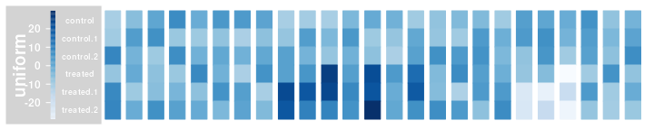
Data Grouping
An additional layer of flexibility is added by making use of Gviz’s grouping functionality. The individual samples (i.e., rows in the data matrix) can be grouped together using a factor variable, and, if reasonable, this grouping is reflected in the layout of the respective track types. For instance our example data could be derived from two different sample groups with three replicates each, and we could easily integrate this information into our plot.
plotTracks(dTrack, groups = rep(c("control", "treated"), each = 3),
type = c("a", "p", "confint"))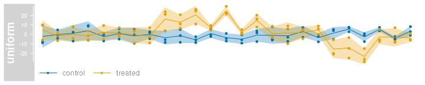
For the dot plot representation the individual group levels are indicated by color coding. For the a type, the averages are now computed for each group separately and also indicated by two lines with similar color coding. Grouping is not supported for all plotting types, for example the mountain and polygon type already use color coding to convey a different message and for the gradient type the data are already collapsed to a single variable. The following gives an overview over some of the other groupable DataTrack types. Please note that there are many more display parameters that control the layout of both grouped and of ungrouped DataTracks. You may want to check the class’ help page for details.2
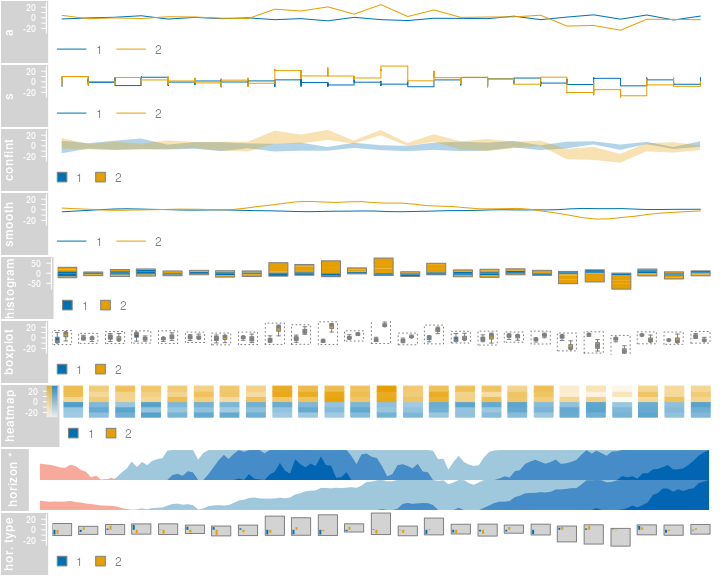
If we need to display some additional information about the individual group levels we can make use of the legend display parameter to add a simple legend to the plot. Depending on the plot type and on some of the other display parameters, the look of this legend may vary slightly.
plotTracks(dTrack, groups = rep(c("control", "treated"), each = 3),
type = c("a", "p"), legend = TRUE)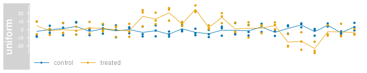
For a grouped horizon plot the group labels have to be shown in a similar fashion as for heatmaps, i.e., by setting the showSampleNames argument to TRUE.
data(dtHoriz)
dtHoriz <- dtHoriz[1:6, ]
plotTracks(dtHoriz, type = "horiz", groups = rownames(values(dtHoriz)),
showSampleNames = TRUE, cex.sampleNames = 0.6, separator = 1)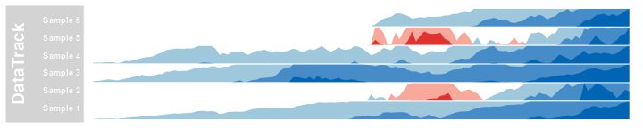
Building DataTrack objects from files
A number of standard file types exist that all store numeric data along genomic coordinates. We have tried to make such files accessible in the Gviz package by providing additional options to the DataTrack constructor function. In the previous examples the range argument was a GRanges object. Instead, we can also pass in the path to a file on disk by means of a character scalar. The DataTrack class supports the most common file types like wig, bigWig or bedGraph, but also knows how to deal with bam files. You may have realized that some of these files are indexed, and we have taken the approach to stream the data from indexed files on the fly when it is needed for plotting.
However let’s first start with the simple example of a bedGraph file. These files support a single data sample, and thus are equivalent to a GRanges object with a single numeric metadata column. bedGraph files are not indexed, so we have to load the whole file content when instantiating the object.
bgFile <- system.file("extdata/test.bedGraph", package = "Gviz")
dTrack2 <- DataTrack(range = bgFile, genome = "hg19", type = "l",
chromosome = "chr19", name = "bedGraph")
class(dTrack2)
## [1] "DataTrack"
## attr(,"package")
## [1] "Gviz"
plotTracks(dTrack2)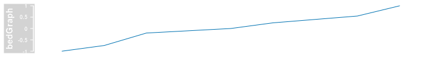
As we can see the constructor has returned a regular DataTrack object. The function to be used in order to read the data off the file has been automatically chosen by the package based on the file extension of the input file. Of course the number of these supported standard file types is limited, and a user may want to import a non-standard file through the same mechanism. To this end, the DataTrack constructor defines an additional argument called importFunction. As the name suggests, the value of this argument is a function which needs to handle the mandatory file argument. Upon evaluation this argument will be filled in with the path to the data file, and the user-defined function needs to provide all logic necessary to parse that file into a valid GRanges object. From this point on everything will happen just as if the range argument had been this GRanges object. In other words, numeric metadata columns will be shown as individual samples and non-numeric columns will be silently ignored. We can exemplify this in the next code chunk. Note that the Gviz package is using functionality from the rtracklayer package for most of the file import operations, just as we do here in a more explicit way.
library(rtracklayer)
dTrack3 <- DataTrack(range = bgFile, genome = "hg19", type = "l",
chromosome = "chr19", name = "bedGraph",
importFunction = function(file) import(con=file))
identical(dTrack2, dTrack3)
## [1] TRUESo far one could have easily done the whole process in two separate steps: first import the data from the file into a GRanges object and then provided this object to the constructor. The real power of the file support in the Gviz package comes with streaming from indexed files. As mentioned before, only the relevant part of the data has to be loaded during the plotting operation, so the underlying data files may be quite large without decreasing the performance or causing too big of a memory footprint. We will exemplify this feature here using a small bam file that is provided with the package. bam files contain alignments of sequences (typically from a next generation sequencing experiment) to a common reference. The most natural representation of such data in a DataTrack is to look at the alignment coverage at a given position only and to encode this in a single metadata column.
bamFile <- system.file("extdata/test.bam", package = "Gviz")
dTrack4 <- DataTrack(range = bamFile, genome = "hg19", type = "l",
name = "Coverage", window = -1,
chromosome = "chr1")
class(dTrack4)
## [1] "ReferenceDataTrack"
## attr(,"package")
## [1] "Gviz"
dTrack4
## ReferenceDataTrack 'Coverage'
## | genome: hg19
## | active chromosome: chr1
## | referenced file: /__w/_temp/Library/Gviz/extdata/test.bam
plotTracks(dTrack4, from = 189990000, to = 190000000)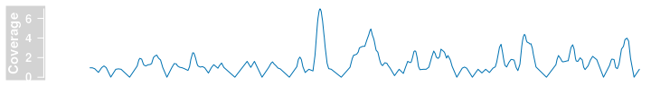
As seen in the previous code chunk, the dTrack4 object is now of class ReferenceDataTrack. For the user this distinction is not particularly relevant with the exception that the length method for this class almost always returns 0 because the content of the object is only realized during the plotting operation. Obviously, streaming from the disk comes with a price in that file access is much slower than accessing RAM, however the file indexing allows for fairly rapid data retrieval, and other processes during the plotting operation tend to be much more costly, anyways. It is worth mentioning however that each plotting operation will cause reading off the file, and there are currently no caching mechanisms in place to avoid that. Nevertheless, plotting a larger chunk of the bam file still finishes in a reasonable time.
plotTracks(dTrack4, chromosome = "chr1", from = 189891483, to = 190087517)Of course users can provided their own file parsing function just like we showed in the previous example. The import function now needs to be able to deal with a second mandatory argument selection, which is a GRanges object giving the genomic interval that has to be imported from the file. In addition one needs to tell the DataTrack constructor that data should be streamed off a file by setting the stream argument to TRUE.
myImportFun <- function(file, selection){
## do something here
}
DataTrack(range = bamFile, genome = "hg19", type = "l",
name = "Coverage", window = -1, chromosome = "chr1",
importFunction = myImportFun, stream = TRUE)
## ReferenceDataTrack 'Coverage'
## | genome: hg19
## | active chromosome: chr1
## | referenced file: /__w/_temp/Library/Gviz/extdata/test.bamData transformations
The Gviz package offers quite some flexibility to transform data on the fly. This involves both rescaling operations (each data point is transformed on the track’s y-axis by a transformation function) as well as summarization and smoothing operations (the values for several genomic locations are summarized into one derived value on the track’s x-axis). To illustrate this let’s create a significantly bigger DataTrack than the one we used before, containing purely synthetic data for only a single sample.
dat <- sin(seq(pi, 10*pi, len=500))
dTrack.big <- DataTrack(start = seq(1, 100000, len = 500), width = 15,
chromosome = "chrX", genome = "hg19",
name = "sinus",
data = sin(seq(pi, 5 * pi, len = 500)) *
runif(500, 0.5, 1.5))
plotTracks(dTrack.big, type="hist")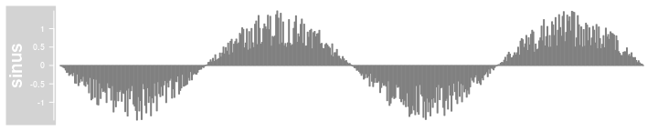
Since the available resolution on our screen is limited we can no longer distinguish between individual coordinate ranges. The Gviz package tries to avoid overplotting by collapsing overlapping ranges (assuming the collapseTracks parameter is set to TRUE). However, it is often desirable to summarize the data, for instance by binning values into a fixed number of windows followed by the calculation of a meaningful summary statistic. This can be archived by a combination of the window and aggregation display parameters. The former can be an integer value greater than zero giving the number of evenly-sized bins to aggregate the data in. The latter is supposed to be a user-supplied function that accepts a numeric vector as a single input parameter and returns a single aggregated numerical value. For simplicity, the most obvious aggregation functions can be selected by passing in a character scalar rather than a function. Possible values are mean, median,extreme,sum, min and max. These presets are also much faster because they have been optimized to operate on large numeric matrices. The default is to compute the mean value of all the binned data points.
plotTracks(dTrack.big, type = "hist", window = 50)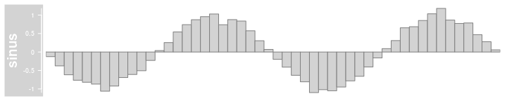
Instead of binning the data in fixed width bins one can also use the window parameter to perform more elaborate running window operations. For this to happen the parameter value has to be smaller than zero, and the additional display parameter windowSize can be used to control the size of the running window. This operation does not change the number of coordinate ranges on the plot, but instead the original value at a particular position is replaced by the respective sliding window value at the same position. A common use case for sliding windows on genomic ranges is to introduce a certain degree of smoothing to the data.
plotTracks(dTrack.big, type = "hist", window = -1, windowSize = 2500)In addition to transforming the data on the x-axis we can also apply arbitrary transformation functions on the y-axis. One obvious use-case would be to log-transform the data prior to plotting. The framework is flexible enough however to allow for arbitrary transformation operations. The mechanism works by providing a function as the transformation display parameter, which takes as input a numeric vector and returns a transformed numeric vector of the same length. The following code for instance truncates the plotted data to values greater than zero.
plotTracks(dTrack.big, type = "l",
transformation = function(x) { x[x < 0] <- 0; x })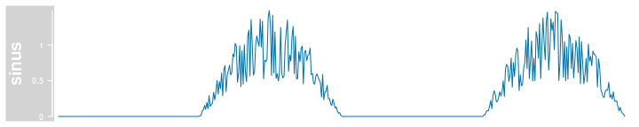
As seen before, the a type allows to plot average values for each of the separate groups. There is however an additional parameter aggregateGroups that generalizes group value aggregations. In the following example we display, for each group and at each position, the average values in the form of a dot-and-lines plot.
plotTracks(dTrack, groups = rep(c("control", "treated"), each = 3),
type = c("b"), aggregateGroups = TRUE)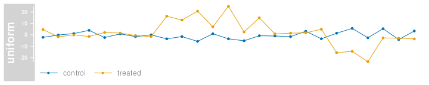
This functionality again also relies on the setting of the aggregation parameter, and we can easily change it to display the maximum group values instead.
plotTracks(dTrack, groups = rep(c("control", "treated"), each = 3),
type = c("b"), aggregateGroups = TRUE, aggregation = "max")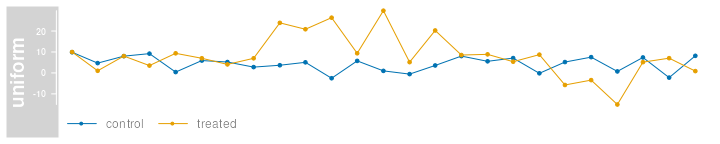
Display parameters for DataTrack objects
For a complete listing of all the available display parameters please see the table below or the man page of the DataTrack class by typing in ?DataTrack on the R command line.
| Display Parameter | Description |
|---|---|
| aggregateGroups | Logical scalar. Aggregate the values within a sample group using the aggregation funnction specified in the aggregation parameter. |
| aggregation | Function or character scalar. Used to aggregate values in windows or for collapsing overlapping items. The function has to accept a numeric vector as a single input parameter and has to return a numeric scalar with the aggregated value. Alternatively, one of the predefined options mean, median sum, min, max or extreme can be supplied as a character scalar. Defaults to mean. |
| alpha.confint | Numeric scalar. The transparency for the confidence intervalls in confint-type plots. |
| amount | Numeric scalar. Amount of jittering in xy-type plots. See panel.xyplot for details. |
| baseline | Numeric scalar. Y-axis position of an optional baseline. This parameter has a special meaning for mountain-type and polygon-type plots, see the ‘Details’ section in DataTrack for more information. |
| box.legend | Logical scalar. Draw a box around a legend. |
| box.ratio | Numeric scalar. Parameter controlling the boxplot appearance. See panel.bwplot for details. |
| box.width | Numeric scalar. Parameter controlling the boxplot appearance. See panel.bwplot for details. |
| cex | Numeric scalar. The default pixel size for plotting symbols. |
| cex.legend | Numeric scalar. The size factor for the legend text. |
| cex.sampleNames | Numeric scalar. The size factor for the sample names text in heatmap or horizon plots. Defaults to an automatic setting. |
| coef | Numeric scalar. Parameter controlling the boxplot appearance. See panel.bwplot for details. |
| col | Character or integer vector. The color used for all line and symbol elements, unless there is a more specific control defined elsewhere. Unless groups are specified, only the first color in the vector is usually regarded. |
| col.baseline | Character scalar. Color for the optional baseline, defaults to the setting of col. |
| col.boxplotFrame | Character scalar. Line color of the frame around grouped boxplots. |
| col.confint | Character vector. Border colors for the confidence intervals for confint-type plots. |
| col.histogram | Character scalar. Line color in histogram-type plots. |
| col.horizon | The line color for the segments in the horizon-type plot. See horizonplot for details. |
| col.mountain | Character scalar. Line color in mountain-type and polygon-type plots, defaults to the setting of col. |
| col.sampleNames | Character or integer scalar. The color used for the sample names in heatmap plots. |
| collapse | Logical scalar. Collapse overlapping ranges and aggregate the underlying data. |
| degree | Numeric scalar. Parameter controlling the loess calculation for smooth and mountain-type plots. See panel.loess for details. |
| do.out | Logical scalar. Parameter controlling the boxplot appearance. See panel.bwplot for details. |
| evaluation | Numeric scalar. Parameter controlling the loess calculation for smooth and mountain-type plots. See panel.loess for details. |
| factor | Numeric scalar. Factor to control amount of jittering in xy-type plots. See panel.xyplot for details. |
| family | Character scalar. Parameter controlling the loess calculation for smooth and mountain-type plots. See panel.loess for details. |
| fill.confint | Character vector. Fill colors for the confidence intervals for confint-type plots. |
| fill.histogram | Character scalar. Fill color in histogram-type plots, defaults to the setting of fill. |
| fill.horizon | The fill colors for the segments in the horizon-type plot. This should be a vector of length six, where the first three entries are the colors for positive changes, and the latter three entries are the colors for negative changes. Defaults to a red-blue color scheme. See horizonplot for details. |
| fill.mountain | Character vector of length 2. Fill color in mountain-type and polygon-type plots. |
| fontcolor.legend | Integer or character scalar. The font color for the legend text. |
| fontface.legend | Integer or character scalar. The font face for the legend text. |
| fontfamily.legend | Integer or character scalar. The font family for the legend text. |
| fontsize.legend | Numeric scalar. The pixel size for the legend text. |
| gradient | Character vector. The base colors for the gradient plotting type or the heatmap type with a single group. When plotting heatmaps with more than one group, the col parameter can be used to control the group color scheme, however the gradient will always be from white to ‘col’ and thus does not offer as much flexibility as this gradient parameter. |
| grid | Logical vector. Draw a line grid under the track content. |
| groups | Vector coercable to a factor. Optional sample grouping. See ‘Details’ section in DataTrack for further information. |
| horizon.origin | The baseline relative to which changes are indicated on the horizon-type plot. See horizonplot for details. |
| horizon.scale | The scale for each of the segments in the horizon-type plot. Defaults to 1/3 of the absolute data range. See horizonplot for details. |
| jitter.x | Logical scalar. Toggle on jittering on the x axis in xy-type plots. See panel.xyplot for details. |
| jitter.y | Logical scalar. Toggle off jittering on the y axis in xy-type plots. See panel.xyplot for details. |
| legend | Boolean triggering the addition of a legend to the track to indicate groups. This only has an effect if at least two groups are present. |
| levels.fos | Numeric scalar. Parameter controlling the boxplot appearance. See panel.bwplot for details. |
| lineheight.legend | Numeric scalar. The line height for the legend text. |
| lty.baseline | Character or numeric scalar. Line type of the optional baseline, defaults to the setting of lty. |
| lty.mountain | Character or numeric scalar. Line type in mountain-type and polygon-type plots, defaults to the setting of lty. |
| lwd.baseline | Numeric scalar. Line width of the optional baseline, defaults to the setting of lwd. |
| lwd.mountain | Numeric scalar. Line width in mountain-type and polygon-type plots, defaults to the setting of lwd. |
| min.distance | Numeric scalar. The mimimum distance in pixel below which to collapse ranges. |
| missingAsZero | Logical scalar. Defines how the missing values are treated in the aggregation procedure with running window. Setting it to TRUE fills empty positions with zeros, which is default. FALSE fills empty positions with NA. |
| na.rm | Boolean controlling whether to discard all NA values when plotting or to keep empty spaces for NAs |
| ncolor | Integer scalar. The number of colors for the ‘gradient’ plotting type |
| notch | Logical scalar. Parameter controlling the boxplot appearance. See panel.bwplot for details. |
| notch.frac | Numeric scalar. Parameter controlling the boxplot appearance. See panel.bwplot for details. |
| pch | Integer scalar. The type of glyph used for plotting symbols. |
| separator | Numeric scalar. Number of pixels used to separate individual samples in heatmap- and horizon-type plots. |
| showColorBar | Boolean. Indicate the data range color mapping in the axis for ‘heatmap’ or ‘gradient’ types. |
| showSampleNames | Boolean. Display the names of the individual samples in a heatmap or a horizon plot. |
| span | Numeric scalar. Parameter controlling the loess calculation for smooth and mountain-type plots. See panel.loess for details. |
| stackedBars | Logical scalar. When there are several data groups, draw the histogram-type plots as stacked barplots or grouped side by side. |
| stats | Function. Parameter controlling the boxplot appearance. See panel.bwplot for details. |
| transformation | Function. Applied to the data matrix prior to plotting or when calling the score method. The function should accept exactly one input argument and its return value needs to be a numeric vector which can be coerced back into a data matrix of identical dimensionality as the input data. |
| type | Character vector. The plot type, one or several in p,l, b, a, a_confint, s, g, r, S, confint, smooth, histogram, mountain, polygon, h, boxplot, gradient, heatmap, horizon. See ‘Details’ section in DataTrack for more information on the individual plotting types. |
| varwidth | Logical scalar. Parameter controlling the boxplot appearance. See panel.bwplot for details. |
| window | Numeric or character scalar. Aggregate the rows values of the data matrix to window equally sized slices on the data range using the method defined in aggregation. If negative, apply a running window of size windowSize using the same aggregation method. Alternatively, the special value auto causes the function to determine the optimal window size to avoid overplotting, and fixed uses fixed-size windows of size windowSize. |
| windowSize | Numeric scalar. The size of the running window when the value of window is negative. |
| ylim | Numeric vector of length 2. The range of the y-axis scale. |
| yTicksAt | Numeric vector. The points at which y-axis tick-marks are to be drawn. By default, when NULL, tickmark locations are computed. |
AnnotationTrack
AnnotationTrack objects are the multi-purpose tracks in the Gviz package. Essentially they consist of one or several genomic ranges that can be grouped into composite annotation elements if needed. In principle this would be enough to represent everything from CpG islands to complex gene models, however for the latter the package defines the specialized GeneRegionTrack class, which will be highlighted in a separate section. Most of the features discussed here will also apply to GeneRegionTrack objects, though. As a matter of fact, the GeneRegionTrack class inherits directly from class AnnotationTrack.
AnnotationTrack objects are easily instantiated using the constructor function of the same name. The necessary building blocks are the range coordinates, a chromosome and a genome identifier. Again we try to be flexible in the way this information can be passed to the function, either in the form of separate function arguments, as IRanges, GRanges or data.frame objects. Optionally, we can pass in the strand information for the annotation features and some useful identifiers. A somewhat special case is to build the object from a GRangesList object, which will automatically preserve the element grouping information contained in the list structure. For the full details on the constructor function and the accepted arguments see ?AnnotationTrack. Let’s take a look at a very simple track:
aTrack <- AnnotationTrack(start = c(10, 40, 120), width = 15,
chromosome = "chrX",
strand = c("+", "*", "-"),
id = c("Huey", "Dewey", "Louie"),
genome = "hg19", name = "foo")
plotTracks(aTrack)The ranges are plotted as simple boxes if no strand information is available, or as arrows to indicate their direction. We can change the range item shapes by setting the shape display parameter. It can also be helpful to add the names for the individual features to the plot. This can be archived by setting the featureAnnotation parameter to 'id'.
plotTracks(aTrack, shape = "box", featureAnnotation = "id")
plotTracks(aTrack, shape = "ellipse", featureAnnotation = "id",
fontcolor.feature = "darkblue")In this very simplistic example each annotation feature consisted of a single range. In real life the genomic annotation features that we encounter often consists of several sub-units. We can create such composite AnnotationTrack objects by providing a grouping factor to the constructor. It needs to be of similar length as the total number of atomic features in the track, i.e, the number of genomic ranges that are passed to the constructor. The levels of the this factor will be used as internal identifiers for the individual composite feature groups, and we can toggle on their printing by setting groupAnnotation to ‘group’.
aTrack.groups <- AnnotationTrack(start = c(50, 180, 260, 460, 860, 1240),
width = c(15, 20, 40, 100, 200, 20),
chromosome = "chrX",
strand = rep(c("+", "*", "-"),
c(1, 3, 2)),
group = rep(c("Huey", "Dewey", "Louie"),
c(1, 3, 2)),
genome = "hg19", name = "foo")
plotTracks(aTrack.groups, groupAnnotation = "group")We can control the placement of the group labels through the just.group parameter.
plotTracks(aTrack.groups, groupAnnotation = "group",
just.group = "right")
plotTracks(aTrack.groups, groupAnnotation = "group",
just.group = "above")Arranging items on the plotting canvas is relatively straight forward as long as there are no overlaps between individual regions or groups of regions. Those inevitably cause overplotting which could seriously obfuscate the information on the plot. A logical solution to this problem is to stack overlapping items in separate horizontal lines to accommodate all of them. This involves some optimization, and the Gviz package automatically tries to come up with the most compact arrangement. Let’s exemplify this feature with a slightly modified AnnotationTrack object.
aTrack.stacked <- AnnotationTrack(start = c(50, 180, 260, 800, 600, 1240),
width = c(15, 20, 40, 100, 500, 20),
chromosome = "chrX",
strand = "*",
group = rep(c("Huey", "Dewey", "Louie"),
c(1, 3, 2)),
genome = "hg19", name = "foo")
plotTracks(aTrack.stacked, groupAnnotation="group")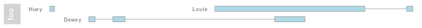
We now have our three annotation feature groups distributed over two horizontal lines. One can control the stacking of overlapping items using the stacking display parameter. Currently the three values squish, dense and hide are supported. Horizontal stacking is enabled via the squish option, which also is the default. The dense setting forces overlapping items to be joined in one meta-item and hide all together disables the plotting of AnnotationTrack items. Please note that adding identifiers to the plot only works for the squish option.
plotTracks(aTrack.stacked, stacking = "dense")In addition to annotation groups there is also the notion of a feature type in the Gviz package. Feature types are simply different types of annotation regions (e.g., mRNA transcripts, miRNAs, rRNAs, etc.) that are indicated by different colors. There is no limit on the number of different features, however each element in a grouped annotation item needs to be of the same feature type. We can query and set features using the feature and feature<- methods.
feature(aTrack.stacked)
## [1] "unknown" "unknown" "unknown" "unknown" "unknown" "unknown"
feature(aTrack.stacked) <- c("foo", "bar", "bar", "bar", "no", "no")Features types can also be shown as either the group or the item annotation on the plot.
plotTracks(aTrack.stacked, featureAnnotation = "feature",
groupAnnotation = "feature", fontcolor.feature = 1,
cex.feature = 0.7)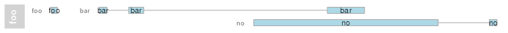
Unless we tell the Gviz package how to deal with the respective feature types they will all be treated in a similar fashion, i.e., they will be plotted using the default color as defined by the fill display parameter. To define colors for individual feature types we simply have to add them as additional display parameters, where the parameter name matches the feature type and its value is supposed to be a valid R color qualifier. Of course this implies that we can only use feature names that are not already occupied by other display parameters defined in the package.
plotTracks(aTrack.stacked, groupAnnotation = "group",
foo = "darkred", bar = "darkgreen")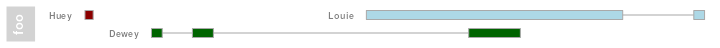
Stacking of annotation items to avoid overplotting only works as long as there is enough real estate on the plotting canvas to separate all items, i.e., we need all items to be at least a single pixel wide to correctly display them. This limitation is automatically enforced by the Gviz package, however it implies that unless neighboring items are more than one pixel apart we can not distinguish between them and will inevitably introduce a certain amount of overplotting. This means that on a common screen device we can only look at a very limited genomic region of a few kb in full resolution. Given that an average chromosome is in the order of a few gb, we still need a reasonable way to deal with the overplotting problem despite the item stacking functionality. As default, the Gviz package will merge all overlapping items into one unified meta-item and only plot that (see ‘Collapse’ section below for details). In order to indicate the amount of overplotting that was introduced by this process we can use the showOverplotting display parameter. It uses a color scale (based on the original colors defined for the track), with lighter colors indicating areas of low or no overplotting, and more saturated colors indicating areas of high overplotting density. We exemplify this feature on an AnnotationTrack object that represents a good portion of a real human chromosome.
data("denseAnnTrack")
plotTracks(denseAnnTrack, showOverplotting = TRUE)Collapsing
All track types that inherit from class AnnotationTrack support the collapsing of overlapping track items, either because they have initially been defined as overlapping coordinates, or because the current device resolution does not allow to sufficiently separate them. For instance, two elements of a feature group may be separated by 100 base pairs on the genomic scale, however when plotted to the screen, those 100 base pairs translate to a distance of less than one pixel. In this case we can no longer show the items as two separate entities. One solution to this problem would be to allow for arbitrary overplotting, in which case the last one of the overlapping items that is drawn on the device wins. This is not optimal in many ways, and it also poses a significant burden on the graphical engine because a lot of stuff has to be drawn which no one will ever see.
To this end the Gviz package provides an infrastructure to reasonably collapse overlapping items, thereby adjusting the information content that can be shown to the available device resolution. By default this feature is turned on, and the user does not have to worry too much about it. However, one should be aware of the consequences this may have on a given visualization. If you absolutely do not want collapsing to take place, you may completely turn it off by setting the display parameter collapse to FALSE. Please note that by doing this the showOverplotting parameter will also stop working. If you opt in, there is some considerable amount of detailed control to fine tune the collapsing to your needs.
Let’s start with a small example track for which element collapsing has been turned off and no adjustments to the ranges have been made. We plot both the item identifiers and the group identifiers to exemplify what is going on.
data(collapseTrack)
plotTracks(ctrack)The first thing to notice is that the for item d we do see the item identifier but not the range itself. This is due to the fact that the width of the item is smaller than a single pixel, and hence the graphics system can not display it (Note that this is only true for certain devices. The quartz device on the Mac seems to be a little smarter about this). There are also the two items e and f which seem to overlay each other completely, and another two items which appear to be just a single fused item (k and l). Again, this is a resolution issue as their relative distance is smaller than a single pixel, so all we see is a single range and some ugly overplotted identifiers. We can control the first issue by setting the minimum pixel width of a plotted item to be one pixel using the min.width display parameter.
plotTracks(ctrack, min.width = 1)
Now the item d has a plotable size and can be drawn to the device. The overplotted items are still rather annoying, but the only way to get rid of those is to turn item collapsing back on.
plotTracks(ctrack, min.width = 1, collapse = TRUE)Now all items that could not be separated by at least one pixel have been merged into a single meta-item, and the software has taken care of the identifiers for you, too. The merging operation is aware of the grouping information, so no two groups where joint together. Sometimes a single pixel width or a single pixel distance is not enough to get a good visualization. In these cases one could decide to enforce even larger values. We can do this not only for the minimum width, but also for the minimum distance by setting the min.distance parameter.
plotTracks(ctrack, min.width = 3, min.distance = 5, collapse = TRUE)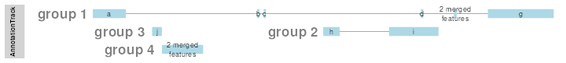
This time also the two items b and c have been merged, and all ranges are now at least 3 pixels wide. Depending on the density of items on the plot even this reduction can be insufficient. Because we did not merge complete groups we might still end up with quite a lot of stacks to accommodate all the information. To this end the display parameter mergeGroups can be used to disable absolute group separation. Rather than blindly merging all groups (as it is done when stacking='dense') however, the software will only join those overlapping group ranges for which all items are already merged into a single meta item.
plotTracks(ctrack, min.width = 3, min.distance = 5, collapse = TRUE,
mergeGroups = TRUE, extend.left = 0.1)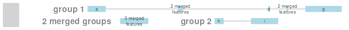
Building AnnotationTrack objects from files
Just like we showed before for DataTrack objects it is possible to stream the data for an AnnotationTrack object off the file system. We will again use the bam file as an example. This time the default import function reads the coordinates of all the sequence alignments from the file and even knows how to deal with grouped elements.
aTrack2 <- AnnotationTrack(range = bamFile, genome = "hg19",
name = "Reads", chromosome = "chr1")
class(aTrack2)
## [1] "ReferenceAnnotationTrack"
## attr(,"package")
## [1] "Gviz"
aTrack2
## ReferenceAnnotationTrack 'Reads'
## | genome: hg19
## | active chromosome: chr1
## | referenced file: /__w/_temp/Library/Gviz/extdata/test.bam
## | mapping: id=id, group=group
plotTracks(aTrack2, from = 189995000, to = 190000000)Since AnnotationTrack objects are somewhat more complicated than DataTrack objects, the constructor provides another level of flexibility when reading the data from a file. More specifically, the user has the ability to map the provided metadata columns of the GRanges object that is returned by the import function to the respective columns in the final AnnotationTrack object. If no explicit mapping is provided, the package will try to find a default mapping based on the input file type and the desired track type. The current mapping of a track is displayed by its show method as can be seen above. The mechanism for changing this default mapping is quite straight forward: if the values in the relevant constructor arguments (in this case group, id and feature) are character scalars, the metadata columns of the GRanges object that is returned by the import function are mapped against their values. For instance we can map the id column to the group attribute and thus suppress the grouping of sequence alignments that originate from the same sequencing read.
aTrack3 <- AnnotationTrack(range = bamFile, genome = "hg19",
name = "Reads", chromosome = "chr1",
group = "id")
aTrack3
## ReferenceAnnotationTrack 'Reads'
## | genome: hg19
## | active chromosome: chr1
## | referenced file: /__w/_temp/Library/Gviz/extdata/test.bam
## | mapping: id=id, group=id
plotTracks(aTrack3, from = 189995000, to = 190000000)
Please note that if no metadata column can be mapped to the constructor arguments their values are assumed to be normal character scalars and they will be recycled accordingly to fill the track’s slots. One can ask for the package’s default mappings by using the availableDefaultMapping function.
availableDefaultMapping(bamFile, "AnnotationTrack")
## $id
## [1] "id"
##
## $group
## [1] "group"We can now plot both the DataTrack representation as well as the AnnotationTrack representation of the bam file together to prove that the underlying data are indeed identical.
plotTracks(list(dTrack4, aTrack2), from = 189990000, to = 190000000)
Display parameters for AnnotationTrack objects
For a complete listing of all the available display parameters please see the table below or the man page of the AnnotationTrack class by typing in ?AnnotationTrack on the R command line.
| Display Parameter | Description |
|---|---|
| arrowHeadMaxWidth | Numeric scalar. The maximum width of the arrow head in pixels if shape is arrow. |
| arrowHeadWidth | Numeric scalar. The width of the arrow head in pixels if shape is fixedArrow. |
| cex | Numeric scalar. The font expansion factor for item identifiers. |
| cex.group | Numeric scalar. The font expansion factor for the group-level annotation. |
| col | Character or integer scalar. The border color for all track items. |
| col.line | Character scalar. The color used for connecting lines between grouped items. Defaults to a light gray, but if set to NULL the same color as for the first item in the group is used. |
| featureAnnotation | Character scalar. Add annotation information to the individual track elements. This can be a value in id, group or feature. Defaults to id. Only works if showFeatureId is not FALSE. |
| fill | Character or integer scalar. The fill color for untyped items. This is also used to connect grouped items. See grouping for details. |
| fontcolor.group | Character or integer scalar. The font color for the group-level annotation. |
| fontcolor.item | Character or integer scalar. The font color for item identifiers. |
| fontface.group | Numeric scalar. The font face for the group-level annotation. |
| fontfamily.group | Character scalar. The font family for the group-level annotation. |
| fontsize.group | Numeric scalar. The font size for the group-level annotation. |
| groupAnnotation | Character scalar. Add annotation information as group labels. This can be a value in id, group or feature. Defaults to group. Only works if showId is not FALSE. |
| just.group | Character scalar. the justification of group labels. Either left, right, above or below. |
| lex | Numeric scalar. The line expansion factor for all track items. This is also used to connect grouped items. See grouping for details. |
| lineheight | Numeric scalar. The font line height for item identifiers. |
| lty | Character or integer scalar. The line type for all track items. This is also used to connect grouped items. See grouping for details. |
| lwd | Integer scalar. The line width for all track items. This is also used to connect grouped items. See grouping for details. |
| mergeGroups | Logical scalar. Merge fully overlapping groups if collapse==TRUE. |
| min.height | Numeric scalar. The minimum range height in pixels to display. All ranges are expanded to this size in order to avoid rendering issues. See collapsing for details. For feathered bars indicating the strandedness of grouped items this also controls the height of the arrow feathers. |
| min.width | Numeric scalar. The minimum range width in pixels to display. All ranges are expanded to this size in order to avoid rendering issues. See collapsing for details. |
| rotation | Numeric scalar. The degree of text rotation for item identifiers. |
| rotation.group | Numeric scalar. The degree of text rotation for group labels. |
| rotation.item | Numeric scalar. The degree of text rotation for item identifiers. |
| shape | Character scalar. The shape in which to display the track items. Currently only box, arrow, fixedArrow, ellipse, and smallArrow are implemented. |
| showFeatureId | Logical scalar. Control whether to plot the individual track item identifiers. |
| showId | Logical scalar. Control whether to annotate individual groups. |
| showOverplotting | Logical scalar. Use a color gradient to show the amount of overplotting for collapsed items. This implies that collapse==TRUE
|
GeneRegionTrack
GeneRegionTrack objects are in principle very similar to AnnotationTrack objects. The only difference is that they are a little more gene/transcript centric, both in terms of plotting layout and user interaction, and that they may define a global start and end position (a feature which is not particularly relevant for the normal user). The constructor function of the same name is a convenient tool to instantiate the object from a variety of different sources. In a nutshell, we need to pass start and end positions (or the width) of each annotation feature in the track and also supply the exon, transcript and gene identifiers for each item which will be used to create the transcript groupings. A somewhat special case is to build a GeneRegionTrack object directly from one of the popular TxDb objects, an option that is treated in more detail below. For more information about all the available options see the class’s manual page (?GeneRegionTrack).
There are a number of accessor methods that make it easy to query and replace for instance exon, transcript or gene assignments. There is also some support for gene aliases or gene symbols which are often times more useful than cryptic data base gene identifiers. The following code that re-uses the GeneRegionTrack object from the first section exemplifies some of these features.
data(geneModels)
grtrack <- GeneRegionTrack(geneModels, genome = gen, chromosome = chr,
name = "foo")
head(gene(grtrack))
head(transcript(grtrack))
head(exon(grtrack))
head(symbol(grtrack))
plotTracks(grtrack)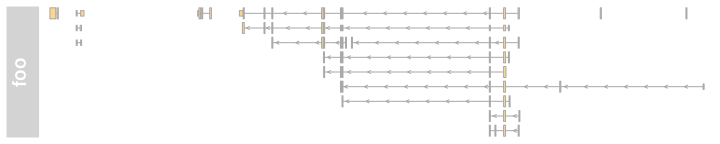
Both exon- and transcript-centric annotation can be added to the plot using the transcriptAnnotation and exonAnnotation display parameters.
plotTracks(grtrack, transcriptAnnotation = "symbol")
plotTracks(grtrack, transcriptAnnotation = "transcript")
plotTracks(grtrack, exonAnnotation = "exon", extend.left = -0.8,
fontcolor.exon = 1)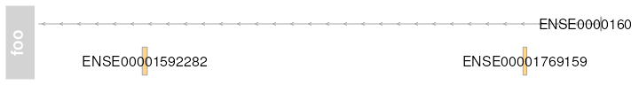
Since we have the gene and transcript level information as part of our GeneRegionTrack objects we can ask the package to collapse all of our gene models from individual exons and transcripts down to gene body locations by setting the collapseTranscripts display parameter to TRUE.
plotTracks(grtrack, collapseTranscripts = TRUE, shape = "arrow",
transcriptAnnotation = "symbol")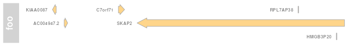
Collapsing down all the way to a gene is not always the desired operation, and the parameters offers a bit more control. For instance we could decide to plot just the longest transcript by setting it to longest.
plotTracks(grtrack, collapseTranscripts = "longest", shape = "arrow",
transcriptAnnotation = "symbol")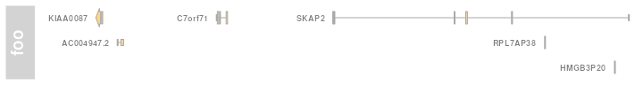
Or we can plot the union of all the exons in some sort of meta-transcript.
plotTracks(grtrack, collapseTranscripts = "meta", shape = "arrow",
transcriptAnnotation = "symbol")Building GeneRegionTrack objects from TxDbs
The GenomicFeatures packages provides an elegant framework to download gene model information from online sources and to store it locally in a SQLite data base. Because these so called TxDb objects have become the de-facto standard for genome annotation information in Bioconductor we tried to make it as simple as possible to convert them into GeneRegionTracks. Essentially one only has to call the constructor function with the TxDb object as a single argument. We exemplify this on a small sample data set that comes with the GenomicFeatures package.
library(GenomicFeatures)
samplefile <- system.file("extdata", "hg19_knownGene_sample.sqlite",
package = "GenomicFeatures")
txdb <- loadDb(samplefile)
GeneRegionTrack(txdb)
## GeneRegionTrack 'GeneRegionTrack'
## | genome: hg19
## | active chromosome: chr1
## | annotation features: 162
## There are 1808 additional annotation features on 26 further chromosomes
## chr10: 17
## chr11: 123
## chr12: 25
## chr13: 37
## chr14: 55
## ...
## chr6_ssto_hap7: 28
## chr7: 46
## chr8: 40
## chr9: 52
## chrX: 250
## Call seqlevels(obj) to list all available chromosomes or seqinfo(obj) for more detailed output
## Call chromosome(obj) <- 'chrId' to change the active chromosomeIn this context, the constructor’s chromosome, start and end argument take on a slightly different meaning in that they can be used to subset the data that is fetched from the TxDb object. Please note that while the chromosome alone can be supplied, providing start or end without the chromosome information will not work.
txTr <- GeneRegionTrack(txdb, chromosome = "chr6",
start = 35000000, end = 40000000)A nice bonus when building GeneRegionTracks from TxDb objects is that we get additional information about coding and non-coding regions of the transcripts, i.e., coordinates of the 5’ and 3’ UTRs and of the CDS regions. The class’ plotting method can use this information to distinguish between coding and non-coding regions based on the shape of the feature. All coding regions are plotted just as we have seen in the previous examples, whereas the non-coding regions are drawn as slightly thinner boxes. The distinction between coding and non-coding is made on the basis of the object’s feature values in combination with a special display parameter thinBoxFeature that enumerates all feature types that are to be treated as non-coding. Obviously this feature is available to all GeneRegionTracks, not only the ones that were build from TxDb objects. However, the coding information has to be added manually and the default value of the thinBoxFeature parameter may not be sufficient to cover all possible cases. It is up to the user to come up with a complete list of non-coding feature types depending on the source of the data.
feature(txTr)
plotTracks(txTr)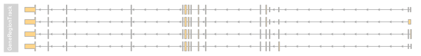
Building GeneRegionTrack objects from EnsDbs
The Gviz is able to build GeneRegionTrack from EnsDb objects. They are similar to TxDb objects however their content is based on Ensembl Genome Browser. The ensembldb package provides a complete framework to download gene model information from Ensembl Genome Browser and to store it locally in a SQLite database as well. For commonly used organisms and recent Ensembl versions, those databases are available directly in the AnnotationHub. The ensembldb package itself provides getGeneRegionTrackForGviz function to build the GeneRegionTrack object from the EnsDb objects.
In recent versions of Gviz package, the GeneRegionTrackcan be also build by calling the constructor function with the EnsDb object as a single argument. We exemplify this using the database provided by EnsDb.Hsapiens.v75 package.
It is important to mention that naming convention for chromosomes is different between UCSC and Ensembl genome browsers. The Gviz uses by default the convention from UCSC and therefore it is important to either: - set the chromosome names of EnsDb to UCSC style by calling seqlevelsStyle(edb) <- "UCSC" - or set Gviz to accept non-UCSC style chromosome names by calling options(ucscChromosomeNames = FALSE)
library(ensembldb)
library(EnsDb.Hsapiens.v75)
edb <- EnsDb.Hsapiens.v75
seqlevelsStyle(edb) <- "UCSC"
eTrack <- GeneRegionTrack(edb, chromosome = "chr6",
start = 35000000, end = 40000000)
plotTracks(eTrack)Display parameters for GeneRegionTrack objects
For a complete listing of all the available display parameters please see the table below or the man page of the GeneRegionTrack class by typing in ?GeneRegionTrack on the R command line.
| Display Parameter | Description |
|---|---|
| alpha | Numeric scalar between 0 and 1. The opacity of the plotting elements, if supported by the device. |
| arrowHeadMaxWidth | Numeric scalar. The maximum width of the arrow head in pixels if shape is arrow. |
| arrowHeadWidth | Numeric scalar. The width of the arrow head in pixels if shape is fixedArrow. |
| cex | Numeric scalar. The font expansion factor for item identifiers. |
| cex.group | Numeric scalar. The font expansion factor for the group-level annotation. |
| col | Character or integer scalar. The border color for all track items. Defaults to using the same color as in fill, also taking into account different track features. |
| collapseTranscripts | Logical or character scalar. Can be one in gene, longest, shortest or meta. Merge all transcripts of the same gene into one single gene model. In the case of gene (or TRUE), this will only keep the start location of the first exon and the end location of the last exon from all transcripts of the gene. For shortest and longest, only the longest or shortest transcript model is retained. For meta, a meta-transcript containing the union of all exons is formed (essentially identical to the operation reduce(geneModel)). |
| exonAnnotation | Character scalar. Add annotation information to the individual exon models. This can be a value in symbol, gene, transcript, exon or feature. Defaults to exon. Only works if showExonId is not FALSE. |
| fill | Character or integer scalar. The fill color for untyped items. This is also used to connect grouped items. See grouping for details. |
| fontcolor | Character or integer scalar. The font color for item identifiers. |
| fontcolor.group | Character or integer scalar. The font color for the group-level annotation. |
| fontface | Integer scalar. The font face for item identifiers. |
| fontface.group | Numeric scalar. The font face for the group-level annotation. |
| fontfamily | Character scalar. The font family for item identifiers. |
| fontfamily.group | Character scalar. The font family for the group-level annotation. |
| fontsize | Numeric scalar. The font size for item identifiers. |
| fontsize.group | Numeric scalar. The font size for the group-level annotation. |
| geneSymbols | Logical scalar. Use human-readable gene symbols or gene IDs for the transcript annotation. |
| lex | Numeric scalar. The line expansion factor for all track items. This is also used to connect grouped items. See grouping for details. |
| lineheight | Numeric scalar. The font line height for item identifiers. |
| lty | Character or integer scalar. The line type for all track items. This is also used to connect grouped items. See grouping for details. |
| lwd | Integer scalar. The line width for all track items. This is also used to connect grouped items. See grouping for details. |
| min.distance | Numeric scalar. The minimum pixel distance before collapsing range items, only if collapse==TRUE. See collapsing for details. Note that a value larger than 0 may lead to UTR regions being merged to CDS regions, which in most cases is not particularly useful. |
| min.width | Numeric scalar. The minimum range width in pixels to display. All ranges are expanded to this size in order to avoid rendering issues. See collapsing for details. |
| rotation | Numeric scalar. The degree of text rotation for item identifiers. |
| shape | Character scalar. The shape in which to display the track items. Currently only box, arrow, ellipse, and smallArrow are implemented. |
| showExonId | Logical scalar. Control whether to plot the individual exon identifiers. |
| showId | Logical scalar. Control whether to annotate individual groups. |
| showOverplotting | Logical scalar. Use a color gradient to show the amount of overplotting for collapsed items. This implies that collapse==TRUE
|
| thinBoxFeature | Character vector. A listing of feature types that should be drawn with thin boxes. Typically those are non-coding elements. |
| transcriptAnnotation | Character scalar. Add annotation information as transcript labels. This can be a value in symbol, gene, transcript, exon or feature. Defaults to symbol. Only works if showId is not FALSE. |
BiomartGeneRegionTrack
As seen before it can be very useful to quickly download gene annotation information from an online repository rather than having to construct it each time from scratch. To this end, the Gviz package also defines the BiomartGeneRegionTrack class, which directly extends GeneRegionTrack but provides a direct interface to the ENSEMBL Biomart service (yet another interface to the UCSC data base content is highlighted in one of the next sections). Rather than providing all the bits and pieces for the full gene model, we just enter a genome, chromosome and a start and end position on this chromosome, and the constructor function BiomartGeneRegionTrack will automatically contact ENSEMBL, fetch the necessary information and build the gene model on the fly. Please note that you will need an internet connection for this to work, and that contacting Biomart can take a significant amount of time depending on usage and network traffic. Hence the results are almost never going to be returned instantaneously.
NOTE: Gviz tries hard to automatically set up the necessary connection to the Biomart service to retrieve the relevant data. Sometimes however it can be advantageous to fully control the Biomart connector, for instance when trying to retrieve data from an archived Ensembl version (by default, biomaRt will always link to the most recent version). To that end, the biomart parameter can be used to supply a biomaRt object. Please note that a data set has to be selected in that object. In the example code below, the older version of human genome assembly (hg19) and matching Biomart version are used.
library(biomaRt)
bm <- useMart(host = "grch37.ensembl.org",
biomart = "ENSEMBL_MART_ENSEMBL",
dataset = "hsapiens_gene_ensembl")
biomTrack <- BiomartGeneRegionTrack(genome = "hg19", chromosome = chr,
start = 20e6, end = 21e6,
name = "ENSEMBL", biomart = bm)
plotTracks(biomTrack)
You may have noticed in the above plot that the track includes feature information which is displayed by the different feature colors and box sizes. This information has been automatically extracted from Biomart and the respective color coding is part of the class’ definition. We can highlight the feature classes even more by using similarly colored bars to connect the grouped elements and by dropping the bounding boxes around the individual exon models.
plotTracks(biomTrack, col.line = NULL, col = NULL)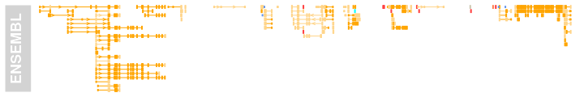
For dense stacked plots like this it can sometimes be helpful to control the vertical spacing between the stacking rows. A simple way to do this is available for each object inheriting form the StackedTrack class by means of the stackHeight display parameter. It takes a value between 0 and 1 that controls which fraction of the available vertical space on a stacking line should be used to draw the feature glyphs.
plotTracks(biomTrack, col.line = NULL, col = NULL, stackHeight = 0.3)
The filter argument to the BiomartGeneRegionTrack constructor can be used to pass on arbitrary additional filters to the Biomart query. We could for instance limit the returned gene models to RefSeq models only. Please see the documentation in the biomaRt package for details.
bm <- useMart(host = "grch37.ensembl.org",
biomart = "ENSEMBL_MART_ENSEMBL",
dataset = "hsapiens_gene_ensembl")
biomTrack <- BiomartGeneRegionTrack(genome = "hg19", chromosome = chr,
start = 20e6, end = 21e6,
name = "ENSEMBL",
filter = list(with_refseq_mrna=TRUE),
biomart = bm)
plotTracks(biomTrack, col.line = NULL, col = NULL, stackHeight = 0.3)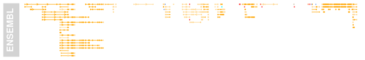
Sometimes it can be more convenient to get a model for a particular gene rather than defining a genomic range. One could use the filter mechanisms as described before for this purpose, however the BiomartGeneRegionTrack implements a more generic way. By providing the gene symbol as the symbol argument, the track will be initialized around the locus for this gene, if it can be found. Alternatively, one can provide the Ensembl transcript or gene id via the transcript or gene arguments, or an Entrez id via the entrez argument. In all of these cases the constructor will also fetch models for other genes that overlap the same region. If that is not desired one needs to provide an explicit Biomart filter.
bm <- useMart(host = "grch37.ensembl.org",
biomart = "ENSEMBL_MART_ENSEMBL",
dataset = "hsapiens_gene_ensembl")
biomTrack <- BiomartGeneRegionTrack(genome = "hg19", name = "ENSEMBL",
symbol = "ABCB5", biomart = bm)
plotTracks(biomTrack, transcriptAnnotation = "symbol")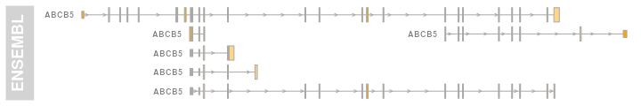
Display parameters for BiomartGeneRegionTrack objects
For a complete listing of all the available display parameters please see the table above in the previous GeneRegionTrack section or the man page of the BiomartGeneRegionTrack class by typing in ?BiomartGeneRegionTrack on the R command line.
As mentioned above, one additional benefit when fetching the data through Biomart is that we also receive some information about the annotation feature types, which is automatically used for the color coding of the track. The following table shows the available feature types.
| Display Parameter | Description | Color |
|---|---|---|
| C_segment | Character or integer scalar. Fill color for annotation objects of type ‘C_segment’. | burlywood4 |
| D_segment | Character or integer scalar. Fill color for annotation objects of type ‘C_segment’. | lightblue |
| J_segment | Character or integer scalar. Fill color for annotation objects of type ‘C_segment’. | dodgerblue2 |
| miRNA | Character or integer scalar. Fill color for annotation objects of type ‘L_segment’. | cornflowerblue |
| miRNA_pseudogene | Character or integer scalar. Fill color for annotation objects of type ‘miRNA_pseudogene’. | cornsilk |
| misc_RNA | Character or integer scalar. Fill color for annotation objects of type ‘misc_RNA’. | cornsilk3 |
| misc_RNA_pseudogene | Character or integer scalar. Fill color for annotation objects of type ‘misc_RNA_pseudogene’. | cornsilk4 |
| Mt_rRNA | Character or integer scalar. Fill color for annotation objects of type ‘Mt_rRNA’. | yellow |
| Mt_tRNA | Character or integer scalar. Fill color for annotation objects of type ‘Mt_tRNA’. | darkgoldenrod |
| Mt_tRNA_pseudogene | Character or integer scalar. Fill color for annotation objects of type ‘Mt_tRNA_pseudogene’. | darkgoldenrod1 |
| protein_coding | Character or integer scalar. Fill color for annotation objects of type ‘protein_coding’. | orange |
| pseudogene | Character or integer scalar. Fill color for annotation objects of type ‘pseudogene’. | brown1 |
| retrotransposed | Character or integer scalar. Fill color for annotation objects of type ‘retrotransposed’. | blueviolet |
| rRNA | Character or integer scalar. Fill color for annotation objects of type ‘rRNA’. | darkolivegreen1 |
| rRNA_pseudogene | Character or integer scalar. Fill color for annotation objects of type ‘rRNA_pseudogene’. | darkolivegreen |
| scRNA | Character or integer scalar. Fill color for annotation objects of type ‘scRNA’. | gold4 |
| scRNA_pseudogene | Character or integer scalar. Fill color for annotation objects of type ‘scRNA_pseudogene’. | darkorange2 |
| snoRNA | Character or integer scalar. Fill color for annotation objects of type ‘snoRNA’. | cyan |
| snoRNA_pseudogene | Character or integer scalar. Fill color for annotation objects of type ‘snoRNA_pseudogene’. | cyan2 |
| snRNA | Character or integer scalar. Fill color for annotation objects of type ‘snRNA’. | coral |
| snRNA_pseudogene | Character or integer scalar. Fill color for annotation objects of type ‘snRNA_pseudogene’. | coral3 |
| tRNA_pseudogene | Character or integer scalar. Fill color for annotation objects of type ‘tRNA_pseudogene’. | antiquewhite3 |
| utr3 | Character or integer scalar. Fill color for annotation objects of type ‘utr3’. | orange |
| utr5 | Character or integer scalar. Fill color for annotation objects of type ‘utr5’. | orange |
| V_segment | Character or integer scalar. Fill color for annotation objects of type ‘V_segment’. | aquamarine |
| verbose | Logical scalar. Report data loading events from Bioamart or retrieval from cache. | FALSE |
DetailsAnnotationTrack
It is sometimes desirable to add more detailed information to particular ranges in an Gviz plot for which the notion of genomic coordinates no longer makes sense. For instance, the ranges in an AnnotationTrack may represent probe locations on a genome, and for each of these probes a number of measurements from multiple samples and from different sample groups are available. To this end, the DetailsAnnotationTrack provides a flexible interface to further annotate genomic regions with arbitrary additional information. This is archived by splitting the AnnotationTrack plotting region into two horizontal sections: the lower section containing the range data in genomic coordinates, and the upper one containing the additional data for each of the displayed ranges in vertically tiled panels of equal size. The connection between a range item and its details panel is indicated by connecting lines.
The content of the individual details panels has to be filled in by a user-defined plotting function that uses grid (or lattice) plotting commands. This function has to accept a number of mandatory parameters, notably the start, end, strand, chromosome and identifier information for the genomic range, as well as an integer counter indicating the index of the currently plotted details tile. This information can be used to fetch arbitrary details, e.g. from a list, and environment or even from a GRanges object which will then be processed and visualized within the plotting function. This may sound rather abstract, and for more details please refer to the class’ help page. For now we just want to demonstrate the functionality in a simple little example. We begin by defining a GRanges object containing 4 genomic locations. In our example those are considered to be probe locations from a methylation array.
library(GenomicRanges)
probes <- GRanges(seqnames = "chr7", ranges = IRanges(
start = c(2000000, 2070000, 2100000, 2160000),
end = c(2050000, 2130000, 2150000, 2170000)),
strand = c("-", "+", "-", "-"))For each of these probes we have methylation measurements from a large number of different samples in a numeric matrix, and within the samples there are two treatment groups. The aim is to compare the distribution of measurement values between these two groups at each probe locus.
methylation <- matrix(c(rgamma(400, 1)),
ncol = 100,
dimnames = list(paste("probe", 1:4, sep = ""), NULL))
methylation[, 51:100] <- methylation[, 51:100] + 0:3
sgroups <- rep(c("grp1", "grp2"), each = 50)Of course we could use a DataTrack with the box-plot representation for this task, however we do have strand-specific data here and some of the probes can be overlapping, so all this information would be lost. We are also interested in the particular shape of the data distribution, so a density plot representation is what we really need. Luckily, the lattice package gives us a nice densityplot function that supports grouping, so all that’s left to do now is to write a little wrapper that handles the extraction of the relevant data from the matrix. This is easily achieved by using the range identifiers, which conveniently map to the row names of the data matrix.
library(lattice)
details <- function(identifier, ...) {
d <- data.frame(signal = methylation[identifier, ], group = sgroups)
print(densityplot(~signal, group = group, data = d,
main = list(label = identifier, cex = 0.7),
scales = list(draw = FALSE, x = list(draw = TRUE)),
ylab = "", xlab = ""),
newpage = FALSE, prefix = "plot")
}Finally, it is as simple as calling the AnnotationTrack constructor, passing along the wrapper function and calling plotTracks.
deTrack <- AnnotationTrack(range = probes, genome = "hg19",
chromosome = 7, id = rownames(methylation),
name = "probe details", stacking = "squish",
fun = details)
plotTracks(deTrack)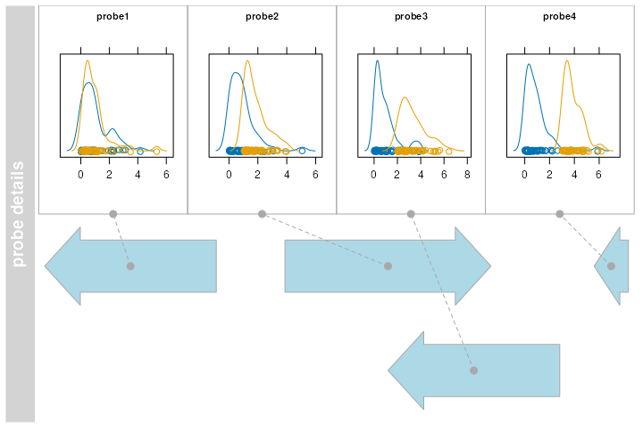
It should be noted here that in our little example we rely on the methylation data matrix and the grouping vector to be present in the working environment. This is not necessarily the cleanest solution and one should consider storing additional data in an environment, passing it along using the detailFunArgs parameter, or making it part of the details function in form of a closure. The class’ help page provides further instructions.
Another use case for the DetailsAnnotationTrack class is to deal with the problem of very different feature sizes within a single track. For instance, we may be looking at a rather large genomic region containing one big transcript with many widely spaced exons and a bunch of smaller, more compact transcripts. In this case it would be helpful to provide a zoomed in version of those smaller transcripts. In order to achieve this we can make use of the class’ groupDetails display parameter, which applies the detail plotting function over each range group rather than over individual range items. First we define a function that selects those groups with a plotted size smaller than 10 pixels. We make use of the unexported function .pxResolution here to come up with the mapping between pixel coordinates and genomic coordinates.
selFun <- function(identifier, start, end, track, GdObject, ...){
gcount <- table(group(GdObject))
## This computes the width of 2 pixels in genomic coordinates
pxRange <- Gviz:::.pxResolution(min.width = 20, coord = "x")
return((end - start) < pxRange && gcount[identifier] == 1)
}The actual detail plotting function is fairly trivial. In the details viewport we simply call plotTracks function on the subset of items from each group that has been selected before without plotting the track titles, and also add a scale indicator for some reference. It is worth mentioning however that we need to extract the ranges of the zoomed in track items from the unmodified track object (the Gdobject.original argument in the details function) because the object that is plotted in the lower panel contains only the collapsed ranges.
detFun <- function(identifier, GdObject.original, ...){
plotTracks(list(GenomeAxisTrack(scale = 0.3, size = 0.2, cex = 0.7),
GdObject.original[group(GdObject.original) == identifier]),
add = TRUE, showTitle = FALSE)
}Finally, we load some sample data, turn it into a DetailsAnnotationTrack object and plot it.
data(geneDetails)
deTrack2 <- AnnotationTrack(geneDetails, fun = detFun,
selectFun = selFun,
groupDetails = TRUE, details.size = 0.5,
detailsConnector.cex = 0.5,
detailsConnector.lty = "dotted",
shape = c("smallArrow", "arrow"),
groupAnnotation = "group")
plotTracks(deTrack2, extend.left = 90000)Display parameters for DetailsAnnotationTrack objects
In addition to the display parameters for the AnnotationTrack class, some additional parameters can be used to control the look and feel of the details sections. For a complete listing of all the available display parameters please see the tables below and the one above in the AnnotationTrack section or the man page of the DetailsAnnotationTrack class by typing in ?DetailsAnnotationTrack on the R command line.
plotTracks(deTrack, details.size = 0.75, detailsConnector.pch = NA,
detailsConnector.col = "darkred",
detailsBorder.fill = "#FFE3BF",
detailsBorder.col = "darkred", shape ="box",
detailsConnector.lty = "dotted")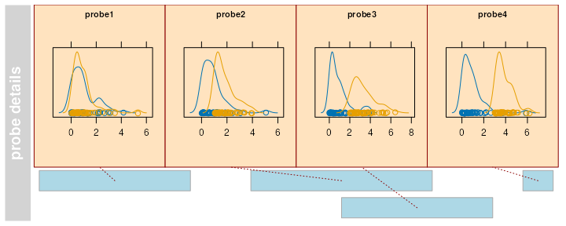
| Display Parameter | Description |
|---|---|
| details.minWidth | Numeric scalar. The minium width in pixels for a details panel, if less space is available no details are plotted. |
| details.ratio | Numeric scalar. By default, the plotting method tries to fill all available space of the details panel tiles. Depending on the dimensions of your plot and the number of tiles this may lead to fairly stretched plots. Restricting the ration of width over height can help to fine tune for somewhat more sane graphics in these cases. Essentially this adds some white space in between individual tiles to force the desired ratio. Together with the size and details.size arguments, which control the vertical extension of the whole track and of the details section, this allows for some fairly generic resizing of the tiles. |
| details.size | Numeric scalar. The fraction of vertical space of the track used for the details section. |
| detailsBorder.col | Character or integer scalar. Line color of the border. |
| detailsBorder.fill | Character or integer scalar. Background color of the border. |
| detailsBorder.lty | Character or integer scalar. Line type of the border around each details panel. |
| detailsBorder.lwd | Integer scalar. Line width of the border. |
| detailsConnector.cex | Numeric scalar. Relative size of the connector’s end points. |
| detailsConnector.col | Character or integer scalar. Color of the line connecting the AnnotstionTrack item with its details panel. |
| detailsConnector.lty | Character or integer scalar. Type of connecting line. |
| detailsConnector.lwd | Integer scalar. Line width of the connector. |
| detailsConnector.pch | Integer scalar. Type of the connector’s ends. |
| detailsFunArgs | List.Additional arguments that get passed on the the details plotting function. |
| groupDetails | Logial scalar. Plot details for feature groups rather than for individual features. |
SequenceTrack
So far we have displayed all kinds of ranges on a genome, but never really looked at the underlying genomic sequence. To that end, the Gviz package defines the SequenceTrack class which can hold genomic sequence information derived from either a DNAStringSet object of, even more convenient, from one of the BSgenome packages. There is not formal checking of the track’s genome, so it is up to the user to provide reasonable inputs to the class’ constructor. As with all the other track types, the constructor has the same name as the class. In this example we build a SequenceTrack from the human hg19 UCSC genome.
library(BSgenome.Hsapiens.UCSC.hg19)
sTrack <- SequenceTrack(Hsapiens)
sTrack
## Sequence track 'SequenceTrack':
## | genome: hg19
## | chromosomes: 298
## | active chromosome: chr1 (249250621 nucleotides)
## Call seqnames() to list all available chromosomes
## Call chromosome()<- to change the active chromosome
## Parent BSgenome object:
## | organism: Homo sapiens
## | provider: UCSC
## | provider version: hg19
## | release date: June 2013
## | package name: BSgenome.Hsapiens.UCSC.hg19Here we retain the same benefits as for regular BSgenome objects in that the actual sequence is only loaded into memory when a particular chromosome is first accessed. Plotting the track yields the expected result: a character representation of the genomic sequence in the current plot window. It may be worth noting that the color scheme that is used to encode the individual nucleotides is defined in the biovizBase package and the user is referred to its documentation for more details.
plotTracks(sTrack, chromosome = 1, from = 20000, to = 20050)Sometimes it may be too busy to plot both the sequence letters and the color coding, and we can assign arbitrary colors by setting the fontcolor display parameter. The convention here is that we need to supply a named vector, with one entry for each of the five possible nucleotides (A, C, T, G, and N). If any of the entries is missing, the respective letter will not be drawn at all.
fcol <- c(A="darkgray", C="darkgray", T="darkgray", G="darkgray")
plotTracks(sTrack, chromosome = 1, from = 20000, to = 20050,
fontcolor = fcol)In this case we are plotting the sequence on the forward strand and we may want to make this clear by adding direction indicators.
plotTracks(sTrack, chromosome = 1, from = 20000, to = 20050,
add53 = TRUE)If instead we plot the complement sequence on the reverse strand, the indicators are automatically adjusted.
plotTracks(sTrack, chromosome = 1, from = 20000, to = 20050,
add53 = TRUE, complement = TRUE)So far we have been able to fit the sequence onto our plotting device without overplotting. I.e., all the letters nicely fit in to their respective position in the genomic coordinate system. However this restricts us to very small windows which we can reasonably display. A much more compact version of the same information is to use colored boxes rather than individual letters. Those boxes can be stacked much closer together, which increases the possible window size quite a bit. The user does not really need to worry about this as the plotting method will automatically make a reasonable decision based on the available space.
plotTracks(sTrack, chromosome = 1, from = 20000, to = 20100)For added flexibility one can set the noLetters display parameter to TRUE to always force the drawing of boxes. Of course also the colored box representation of a sequence has its limits, and if we cross the threshold when individual boxes can not be separated anymore, the plotting method falls back to drawing a single line indicating the presence of a sequence at the given position.
plotTracks(sTrack, chromosome = 1, from = 20000, to = 201000)Finally, the selected font size is also contributing to the available space, and we can cram a little more sequence into a given window by decreasing it.
plotTracks(sTrack, chromosome = 1, from = 20000, to = 20100, cex = 0.5)Display parameters for SequenceTrack objects
For a complete listing of all the available display parameters please see the table below or the man page of the SequenceTrack class by typing in ?SequenceTrack on the R command line.
| Display Parameter | Description |
|---|---|
| add53 | Logical scalar. Add a direction indicator. |
| cex | The character expansion factor for the size of the sequence letters. Together with fontsize this determines the final font size and thus the level of plotable details. |
| col | Character scalar. The color of the line when no indiviual letters can be plotted due to size limitations. |
| col.border.title | Integer or character scalar. The border color for the title panels. |
| complement | Logical scalar. Plot the sequence complement. |
| fontcolor | Character vector. The colors used for the 5 possible nucleotides (G, A, T, C, N). Defaults to use colors as defined in the biovizBase package. |
| fontface | Numeric scalar. The face of the font. |
| fontsize | Numeric scalar. Controls the size of the sequence letters and thus also the level of plotable details. |
| lwd | Numeric scalar. The width of the line when no indiviual letters can be plotted due to size limitations. |
| lwd.border.title | Integer scalar. The border width for the title panels. |
| min.width | Numeric scalar. The minimum width in pixels of the colored boxes that are drawn when no indiviual letters can be plotted due to size limitations. If the horizontal space that a single base occupies is smaller than this value, only a horizontal line is drawn to indicate the presence of a sequence. |
| noLetters | Logical scalar. Always plot colored boxes (or a line) regardles of the available space. |
| rotation | Numeric scalar. The rotation angle for each individual letter in the sequence. |
AlignmentsTrack
Plots of aligned sequences, typically from next generation sequencing experiments can be quite helpful, for instance when visually inspecting the validity of a called SNP. Those alignments are usually stored in BAM files. As shown in some of the previous section we can deal with these files in a fairly crude way by coupling them to either an AnnotationTrack or a DataTrack. The utility of the generated plots however is fairly limited, and we want in particular support for gapped and paired alignments, and show differences of the individual read sequences to a reference.
The AlignmentsTrack class is designed to help in exactly these tasks. In its typical manifestation it is also a member of the ReferenceTrack class, enabling memory efficient streaming directly off a file. Even though this file does not necessarily have to be a BAM file, the automatic import will only work for those. For all other file representations of alignments a user will have to provide their own import function, and this topic is further discussed in the class’ documentation. For this demonstration let’s use a small BAM file for which paired NGS reads have been mapped to an extract of the human hg19 genome. The data originate from an RNASeq experiment, and the alignments have been performed using the STAR aligner allowing for gaps. We also download some gene annotation data for that region from Biomart.
Again, creating the AlignmentsTrack object is as simple as calling the constructor function of the same name. We set the isPaired argument to TRUE in order to tell the constructor that it should expect paired reads. Please note that TRUE is the default value for this parameter and usually things will still work even if the reads do not originate from a paired end library. In other words, the default setting could be used as a poor-man’s auto-detection, however it make more sense to supply the argument explicitly if you know what type of data to expect.
afrom <- 2960000
ato <- 3160000
alTrack <- AlignmentsTrack(
system.file(package = "Gviz", "extdata", "gapped.bam"),
isPaired = TRUE)
bmt <- BiomartGeneRegionTrack(genome = "hg19", chromosome = "chr12",
start = afrom, end = ato,
filter = list(with_refseq_mrna = TRUE),
stacking = "dense")We can create a first plot of our read alignments data from a birds eye perspective, say a range of 20,000 nucleotides.
plotTracks(c(bmt, alTrack), from = afrom, to = ato,
chromosome = "chr12")Now this already shows us the general layout of the track: on top we have a panel with the read coverage information in the form of a histogram, and below that a pile-up view of the individual reads. There is only a certain amount of vertical space available for the plotting, and not the whole depth of the pile-up can be displayed here. This fact is indicated by the white downward-pointing arrows in the title panel. We could address this issue by playing around with the max.height, min.height or stackHeight display parameters which all control the height or the vertical spacing of the stacked reads. Or we could reduce the size of the coverage section by setting the coverageHeight or the minCoverageHeight parameters. Please see the class documentation for more details.
plotTracks(c(bmt, alTrack), from = afrom, to = ato,
chromosome = "chr12", min.height = 0,
coverageHeight = 0.08, minCoverageHeight = 0)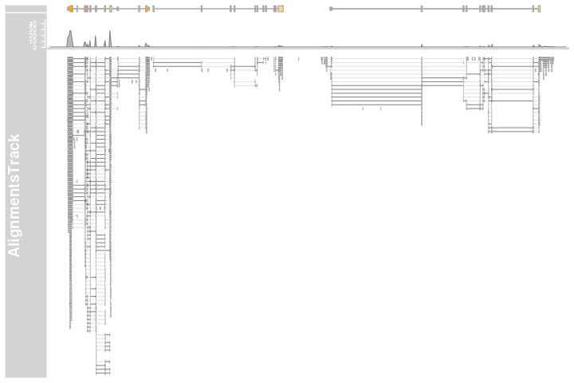
From that far out the pile-ups are not particularly useful, and we can turn those off by setting the type display parameter accordingly.
plotTracks(c(alTrack, bmt), from = afrom, to = ato,
chromosome = "chr12", type = "coverage")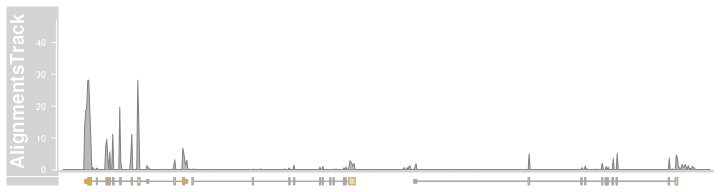
Let’s zoom in a bit further to check out the details of the pile-ups section.
plotTracks(c(bmt, alTrack), from = afrom + 12700,
to = afrom + 15200, chromosome = "chr12")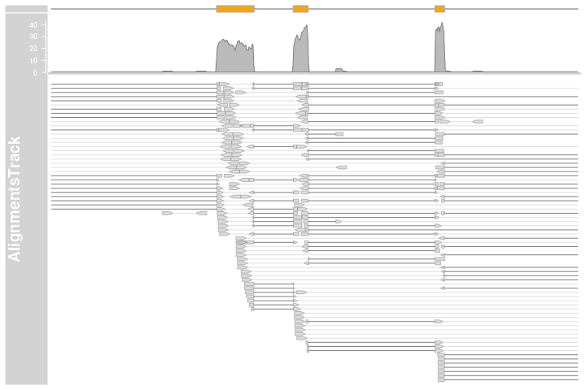
The direction of the individual reads is indicated by the arrow head, and read pairs are connected by a bright gray line. Gaps in the alignments are show by the connecting dark gray lines. Numbers of reads supporting each gap can be visualized as “sashimi plot” (Katz et al. 2015) by adding 'sashimi' as an additional argument to the type display parameter.
The axis in the title panel shows the relationship between the line width the the number of reads spanning a given junction. The height of each arc is not informative, it is optimized to fit all overlapping junctions in a small window.
plotTracks(c(bmt, alTrack), from = afrom + 12700,
to = afrom + 15200, chromosome = "chr12",
type = c("coverage", "sashimi"))It is also possible to filter the junctions by including the coordinates as an additional argument sashimiFilter. In this case only junction which equally overlaps with specified GRanges object are shown.
introns <- GRanges("chr12", IRanges(start = c(2973662, 2973919),
end = c(2973848, 2974520)))
plotTracks(c(bmt, alTrack), from = afrom + 12700, to = afrom + 15200,
chromosome = "chr12", type = c("coverage", "sashimi"),
sashimiFilter = introns)However sometimes the aligners do not place the junction reads precisely on the exon-intron boundaries and it is therefore useful to include also junctions which are shifted by few bases. This can be done by setting the additional argument sashimiFilterTolerance to small positive integer value.
plotTracks(c(bmt, alTrack), from = afrom + 12700, to = afrom + 15200,
chromosome = "chr12", type = c("coverage", "sashimi"),
sashimiFilter = introns, sashimiFilterTolerance = 5L)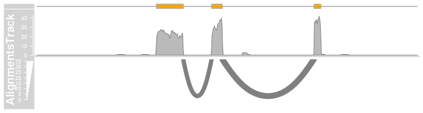
On devices that support transparency we can also see that some of the read pairs are actually overlapping. Like before, we can not display the full depth of the pile-up, and the clipping that takes place hides a lot of the reads from the view. Another way of getting to see at least some of them is by reversing the stacking order. We can also play around with some of the other display parameters that control the look and feel of the reads.
plotTracks(c(bmt, alTrack), from = afrom + 12700, to = afrom + 15200,
chromosome = "chr12", reverseStacking = TRUE,
col.mates = "purple", col.gap = "orange", type = "pileup")
As mentioned before we can control whether the data should be treated as paired end or single end data by setting the isPaired argument in the constructor. Here is how we could take a look at the data in the same file, but in single end mode.
alTrack <- AlignmentsTrack(
system.file(package = "Gviz", "extdata", "gapped.bam"),
isPaired = FALSE)
plotTracks(c(bmt, alTrack), from = afrom + 12700, to = afrom + 15200,
chromosome = "chr12")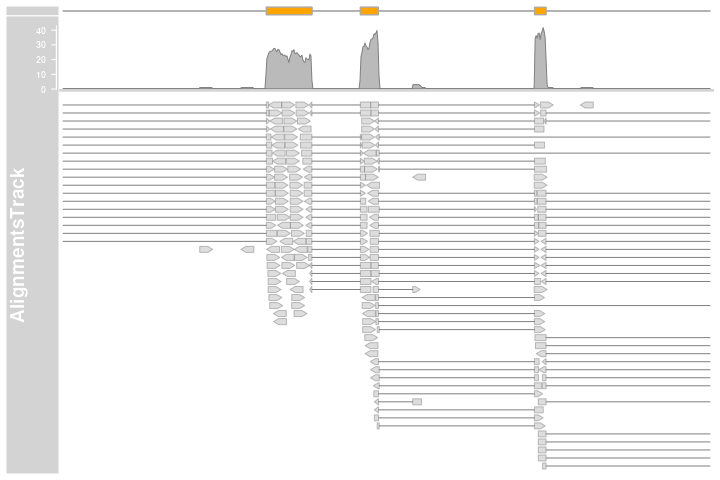
So far we did not look at the individual read sequences at all. Even though they are contained in the BAM file, their value is fairly limited without the reference sequence against which the reads have initially been aligned. Typically the mismatch positions and the variant bases are not included. (Please note that this is not entirely true for all BAM files. One can store base mismatch positions in the CIGAR string, or even the full variant description in the non-standard MD field. However very few aligners currently make use of these features. We may implement support for those later if found necessary.)
To better show the features of the AlignmentsTrack for sequence variants we will load a different data set, this time from a whole genome DNASeq SNP calling experiment. Again the reference genome is hg19 and the alignments have been performed using Bowtie2.
afrom <- 44945200
ato <- 44947200
alTrack <- AlignmentsTrack(
system.file(package = "Gviz", "extdata", "snps.bam"), isPaired = TRUE)
plotTracks(alTrack, chromosome = "chr21", from = afrom, to = ato)Somehow we need to tell the AlignmentsTrack about the reference genome, and there are two ways to archive this. Either we provide a SequenceTrack object with the reference to the constructor function via the referenceSequence argument, or we stick it into the track list that is provided to the plotTrack which is smart enough to detect it there. For this example we chose the second option and re-use the SequenceTrack object from the previous section.
plotTracks(c(alTrack, sTrack), chromosome = "chr21",
from = afrom, to = ato)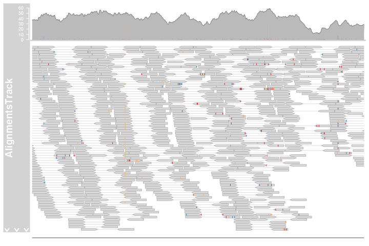
The mismatched bases are now indicated on both the individual reads in the pileup section and also in the coverage plot in the form of a stacked histogram. When zooming in to one of the obvious heterozygous SNP positions we can reveal even more details.
plotTracks(c(alTrack, sTrack), chromosome = "chr21",
from = 44946590, to = 44946660)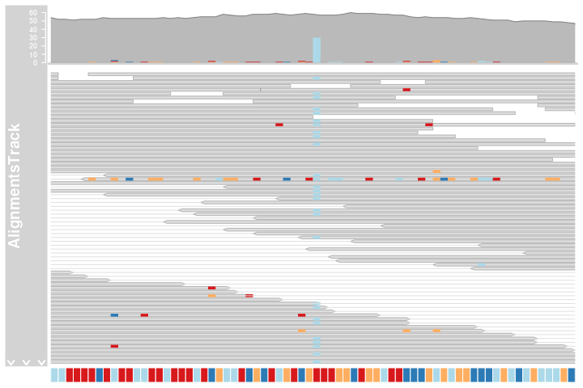
Just like shown before in the SequenceTrack we can even show individual letters here as long as there is enough space to fit them. This can be controlled using the display parameters min.height, max.height and cex.
plotTracks(c(alTrack, sTrack), chromosome = "chr21", from = 44946590,
to = 44946660, cex = 0.5, min.height = 8)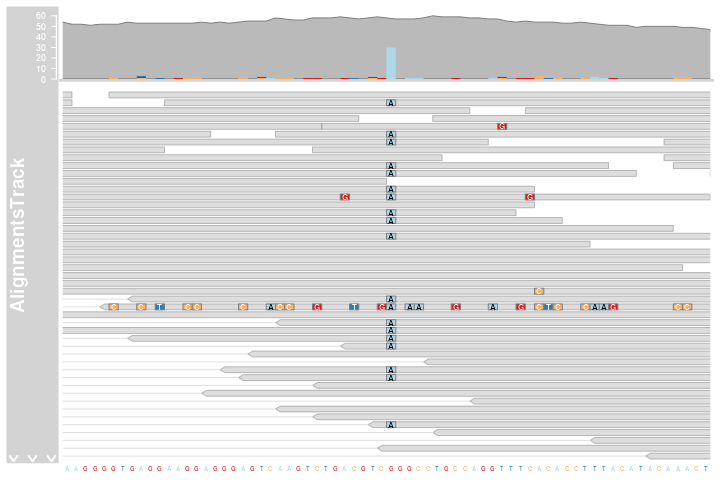
It is also possible to visualize the “indels” present in the alignments. This can be achieved by setting the showIndels parameter to TRUE. The coverage plot will no longer count the part of the reads corresponding to deletions. The appearance of insertions and deletions in pile-up track can be defined by setting the color, line width and line type (col.deletion, col.insertion, lty.deletion, lty.insertion, lwd.deletion, lwd.insertion). By default the insertions are indicated with violet vertical bars and the deletions are shown as black connecting lines.
indelTrack1 <- AlignmentsTrack(
system.file(package = "Gviz", "extdata", "indels.bam"),
name = "Standard")
indelTrack2 <- AlignmentsTrack(
system.file(package = "Gviz", "extdata", "indels.bam"),
showIndels=TRUE, name="Indels")
plotTracks(c(indelTrack1, indelTrack2),
chromosome = "chr2", from = 126442000, to = 126453000)Display parameters for AlignmentsTrack objects
For a complete listing of all the available display parameters please see the table below or the man page of the AlignmentsTrack class by typing in ?AlignmentsTrack on the R command line.
| Display Parameter | Description |
|---|---|
| alpha.mismatch | Numeric scalar between 0 and 1. The transparency of the mismatch base information. |
| alpha.reads | Numeric scalar between 0 and 1. The transparency of the individual read icons. Can be used to indicate overlapping regions in read pairs. Only on supported devices. |
| cex | Numeric Scalar. The global character expansion factor. |
| cex.mismatch | Numeric Scalar. The character expansion factor for the mismatch base letters. |
| col | Integer or character scalar. The default color of all line elements. |
| col.coverage | Integer or character scalar. The line color for the coverage profile. |
| col.deletion | Integer or character scalar. The color of the line that is bridging the deleted regions in alignments. |
| col.gap | Integer or character scalar. The color of the line that is bridging the gap regions in gapped alignments. |
| col.insertion | Integer or character scalar. The color of the line that highlighting insertions in alignments. |
| col.mates | Integer or character scalar. The color of the line that is connecting two paired reads. |
| col.mismatch | Integer or character scalar. The box color around mismatch bases. |
| col.reads | Integer or character scalar. The box color around reads. |
| col.sashimi | Integer or character scalar. The line color for sashimi plots. |
| collapse | Logical scalar. Do not perform any collapsing of overlapping elements. Currently not supported. |
| coverageHeight | Numeric scalar. The height of the coverage region of the track. Can either be a value between 0 and 1 in which case it is taken as a relative height, or a positive value greater 1 in which case it is interpreted as pixels. |
| fill | Integer or character scalar. The default fill color of all plot elements. |
| fill.coverage | Integer or character scalar. The fill color for the coverage profile. |
| fill.reads | Integer or character scalar. The fill color for the read icons. |
| fontface.mismatch | Integer scalar. The font face for mismatch bases. |
| lty | Integer or character scalar. The default type of all line elements. |
| lty.coverage | Integer or character scalar. The line type of the coverage profile. |
| lty.deletion | Integer or character scalar. The type of the line that is bridging the deleted regions in alignments. |
| lty.gap | Integer or character scalar. The type of the line that is bridging the gap regions in gapped alignments. |
| lty.insertion | Integer or character scalar. The type of the line that highlighting insertions in alignments. |
| lty.mates | Integer or character scalar. The type of the line that is connecting two paired reads. |
| lty.mismatch | Integer or character scalar. The box line type around mismatch bases. |
| lty.reads | Integer or character scalar. The box line type around mismatch reads. |
| lwd | Integer scalar. The default width of all line elements. |
| lwd.coverage | Integer or character scalar. The line width of the coverage profile. |
| lwd.deletion | Integer scalar. The width of the line that is bridging the deleted regions in alignments. |
| lwd.gap | Integer scalar. The width of the line that is bridging the gap regions in gapped alignments. |
| lwd.insertion | Integer scalar. The width of the line that highlighting insertions in alignments. |
| lwd.mates | Integer scalar. The width of the line that is connecting two paired reads. |
| lwd.mismatch | Integer scalar. The box line width around mismatch bases. |
| lwd.reads | Integer scalar. The box line width around reads. |
| lwd.sashimiMax | Integer scalar. The maximal width of the line in sashimi plots. |
| max.height | Integer scalar. The maximum height of an individual read in pixels. Can be used in combination with min.height to control the read and stacking appearance. |
| min.height | Integer scalar. The minimum height of an individual read in pixels. Can be used in combination with max.height to control the read and stacking appearance. |
| minCoverageHeight | Integer scalar. The minimum height of the coverage section. Uselful in combination with a relative setting of coverageHeight. |
| minSashimiHeight | Integer scalar. The minimum height of the sashimi section. Uselful in combination with a relative setting of sashimiHeight. |
| noLetters | Logical scalar. Always plot colored boxes for mismatch bases regardles of the available space. |
| sashimiFilter | GRanges object. Only junctions which overlap equally with sashimiFilter GRanges are shown. Default NULL, no filtering. |
| sashimiFilterTolerance | Integer scalar. Only used in combination with sashimiFilter. It allows to include junctions whose starts/ends are within specified distance from sashimiFilter GRanges. This is useful for cases where the aligner did not place the junction reads precisely. Default 0L , no tolerance. |
| sashimiHeight | Integer scalar. The height of the sashimi part of the track. Can either be a value between 0 and 1 in which case it is taken as a relative height, or a positive value greater 1 in which case it is interpreted as pixels. |
| sashimiScore | Integer scalar. The minimum number of reads supporting the junction. |
| sashimiStrand | Integer scalar. Only reads which have the specified strand are considered to count the junctions. |
| sashimiTransformation | Function. Applied to the junction score vector prior to plotting. The function should accept exactly one input argument and its return value needs to be a numeric vector of identical length as the input data. |
| showIndels | Logical scalar. Consider insertions and deletions in coverage and pile-up. Default is FALSE. If set to TRUE the deletions defined in CIGAR string are not considered in coverage plot. The deletions are displayed as bridging lines in pile-up track. Insertions are shown as vertical bars. |
| showMismatches | Logical scalar. Add mismatch information, either as individual base letters or using color coded bars. This implies that the reference sequence has been provided, either to the class constructor or as part of the track list. |
| transformation | Function. Applied to the coverage vector prior to plotting. The function should accept exactly one input argument and its return value needs to be a numeric Rle of identical length as the input data. |
| type | Character vactor. The type of information to plot. For coverage a coverage plot, potentially augmented by base mismatch information, for sashimi a sashimi plot, showing the juctions, and for pileup the pileups of the individual reads. These three can be combined. |
Creating tracks from UCSC data
The UCSC data bases contain a multitude of genome annotation data for dozens of different organisms. Some of those data are very simple annotations like CpG island locations or SNP locations. Others are more complicated gene models, or even numeric annotations like conservation information. In order to provide a unified interface to all this information, the Gviz package defines a meta-constructor function UcscTrack. The idea here is that we can express all of the available UCSC data in one of the package’s track types. We use the functionality provided in the rtracklayer package to connect to UCSC and to download the relevant information. As a little illustrative example, let’s reproduce a view from the famous UCSC genome browser using the Gviz package. As a final result we want to show something similar to Figure @ref(fig:UCSC1).

A screen shot of a UCSC genome browser view around the FMR1 locus on the mouse chromosome.
To start we first need to know about the available data in the UCSC data base and about their structure. A good way to do this is to use the table browser on the UCSC web site. Figure @ref(fig:UCSC2) shows the table structure for the first gene model track, the known UCSC genes, in the table browser. We can see that there are multiple fields, some with genomic locations, other with additional data like labels or identifiers. If we go back to the section about the GeneRegionTrack class we remember that we need exactly this type of information for the constructor function. So in order to take the UCSC data and build an object of class GeneRegionTrack we need a way to map them to the individual constructor arguments. This is exactly what the UcscTrack meta-constructor is supposed to do for us.

A screen shot of a UCSC table browser view on the UCSC Known Genes track.
It needs to know about the track for which to extract the data (and optionally one or several of the tables that make up the collective track data, see ?UcscTrack for details), about the genomic range including the chromosome for which to extract data, about the type of Gviz track that we want to translate this data into, and about the individual track columns and their counterparts in the respective track class constructor. In our example, the track is called knownGene, the track type to construct is GeneRegionTrack, and the relevant columns are exonStarts, exonEnds, name and strand, which we will use as the start and end coordinates of the ranges and for all the exon, transcript and gene identifiers. Here we make use of the high flexibility of the GeneRegionTrack constructor in the sense that the exon coordinates actually come in the form of a comma-separated list, combining all the information for one transcript in one row of the table. The function is smart enough to detect this and to split the annotation regions accordingly. The full function call to create the GeneRegionTrack from the UCSC data looks like this:
from <- 65921878
to <- 65980988
knownGenes <- UcscTrack(genome = "mm9", chromosome = "chrX",
track = "knownGene", from = from, to = to,
trackType = "GeneRegionTrack",
rstarts = "exonStarts", rends = "exonEnds",
gene = "name", symbol = "name",
transcript = "name", strand = "strand",
fill = "#8282d2", name = "UCSC Genes")With a similar approach we can construct the next two gene model tracks based on the xenoRefGene and ensGene data tables.
refGenes <- UcscTrack(genome = "mm9", chromosome = "chrX",
track = "xenoRefGene", from = from, to = to,
trackType = "GeneRegionTrack",
rstarts = "exonStarts", rends = "exonEnds",
gene = "name", symbol = "name2",
transcript = "name", strand = "strand",
fill = "#8282d2", stacking = "dense",
name = "Other RefSeq")
ensGenes <- UcscTrack(genome = "mm9", chromosome = "chrX",
track = "ensGene", from = from, to = to,
trackType = "GeneRegionTrack",
rstarts = "exonStarts", rends = "exonEnds",
gene = "name", symbol = "name2",
transcript = "name", strand = "strand",
fill = "#960000", name = "Ensembl Genes")The CpG and SNP tracks are slightly different since a GeneRegionTrack representation would not be particularly useful. Instead, we can use AnnotationTrack objects as containers. The overall process using the UcscTrack meta-constructor remains the same.
cpgIslands <- UcscTrack(genome = "mm9", chromosome = "chrX",
track = "cpgIslandExt", from = from, to = to,
trackType = "AnnotationTrack",
start = "chromStart", end = "chromEnd",
id = "name", shape = "box", fill = "#006400",
name = "CpG Islands")
snpLocations <- UcscTrack(genome = "mm9", chromosome = "chrX",
track = "snp128", from = from, to = to,
trackType = "AnnotationTrack",
start = "chromStart", end = "chromEnd",
id = "name", feature = "func",
strand = "strand", shape = "box",
stacking = "dense", fill = "black",
name = "SNPs")Most of UCSC’s DataTrack-like tracks are a little more complex and represent a collection of several sub-tracks, with data originating from multiple tables. To make sure that we get the correct information we have to be a little bit more specific here and also define the particular table on the UCSC data base to use.
conservation <- UcscTrack(genome = "mm9", chromosome = "chrX",
track = "Conservation",
table = "phyloP30wayPlacental",
from = from, to = to, trackType = "DataTrack",
start = "start", end = "end", data = "score",
type = "hist", window = "auto",
col.histogram = "darkblue",
fill.histogram = "darkblue",
ylim = c(-3.7, 4), name = "Conservation")
gcContent <- UcscTrack(genome = "mm9", chromosome = "chrX",
track = "GC Percent", table = "gc5Base",
from = from, to = to, trackType = "DataTrack",
start = "start", end = "end", data = "score",
type = "hist", window = -1, windowSize = 1500,
fill.histogram = "black", col.histogram = "black",
ylim = c(30, 70), name = "GC Percent")To add some reference points we also need a genome axis and an IdeogramTrack of the x chromosome.
axTrack <- GenomeAxisTrack()
idxTrack <- IdeogramTrack(genome="mm9", chromosome="chrX")And finally we can plot all of our tracks.
plotTracks(list(idxTrack, axTrack, knownGenes, refGenes, ensGenes,
cpgIslands, gcContent, conservation, snpLocations),
from = from, to = to, showTitle = FALSE)Track highlighting and overlays
Highlighting
Some features of a typical genome browser plot are not specific for just a single track, but instead span multiple tracks. One prominent example are highlighting regions. Assume you want to draw the attention on the plot to a particular genomic stretch where the visual clues across several or maybe even all tracks indicate a particular interesting behavior. Because the individual tracks in the Gviz package are all represented by individual objects, there is no straight forward way to define such a region. Here is where the HighlightingTrack class comes into play. Objects from this class are essentially just containers for one or several of the previously described track objects, together with a very simple range definition that is to be superimposed over the individual tracks once they have been rendered. Going back to our final example from the second chapter we could highlight two areas on the plot on the AnnotationTrack, the GeneRegionTrack and the DataTrack using the HighlightTrack constructor in the following call:
ht <- HighlightTrack(trackList = list(atrack, grtrack, dtrack),
start = c(26705000, 26720000), width = 7000,
chromosome = 7)
plotTracks(list(itrack, gtrack, ht), from = lim[1], to = lim[2])One can also build multiple HighlightTrack collections to create gaps in the highlighting regions. For IdeogramTracks we never plot highlighting ranges because they do not live on the same x-axis coordinate system like the other tracks.
ht1 <- HighlightTrack(trackList=list(itrack, gtrack, atrack),
start = c(26705000, 26720000), width = 7000,
chromosome = 7)
ht2 <- HighlightTrack(trackList = dtrack, start = c(26705000, 26720000),
width = 7000, chromosome = 7)
plotTracks(list(ht1, grtrack, ht2), from = lim[1], to = lim[2])Display parameters for HighlightTrack objects
For a complete listing of all the available display parameters please see the table below or the man page of the HighlightTrack class by typing in ?HighlightTrack on the R command line.
| Display Parameter | Description |
|---|---|
| col | Integer or character vector. The border color for the highlighting regions. |
| fill | Integer or character vector. The fill color for the highlighting regions. |
| inBackground | Logical scalar. Place the box in the background or in the foreground. |
Overlays
For certain applications it can make sense to overlay multiple tracks on the same area of the plot. For instance when dealing with multiple data sets that do not necessarily share the same genomic coordinates for their data points the design of the DataTrack class is not optimal. To contrast these two data sets an overlay of two separate DataTrack objects however can be quite powerful.The Gviz package allows for such overlay operations by means of the OverlayTrack class. Similar to the HighlightTrack class from the previous section this is merely a container for an arbitrary number of other Gviz track objects. For the purpose of an instructive example we will generate a second DataTrack object and combine it with the existing one from the second chapter.
dat <- runif(100, min = -2, max = 22)
dtrack2 <- DataTrack(data = dat, start = coords[-length(coords)],
end = coords[-1], chromosome = chr, genome = gen,
name = "Uniform2", groups = factor("sample 2",
levels = c("sample 1", "sample 2")), legend = TRUE)
displayPars(dtrack) <- list(groups = factor("sample 1",
levels = c("sample 1", "sample 2")), legend = TRUE)
ot <- OverlayTrack(trackList=list(dtrack2, dtrack))
ylims <- extendrange(range(c(values(dtrack), values(dtrack2))))
plotTracks(list(itrack, gtrack, ot), from = lim[1], to = lim[2],
ylim = ylims, type = c("smooth", "p"))
It is important to know that Gviz is fully unaware of the intention and any specifics of the track merging operation. Any track type can be merged with any other track type, and there are no limitations on the number of overlays. It is totally up to the user to design reasonable merges and to control critical aspects of the plot, like the y-axis scaling or the grouping in the above example. During rendering, the software will only use the first track object in the trackList container of OverlayTracks object to set up the track title. Thus, the ranges on the y-axis are those that have been automatically determined for the first of our two DataTracks. Only by forcing a common y-range for both objects do we actually plot the data from both tracks on a common scale. Had we added another track object that is not a DataTrack is the first element of our trackList there wouldn’t even be an axis. In a similar fashion, by nicely setting up the group levels for the two DataTracks we can even ask for a legend to be added.
On devices that support it, alpha blending can be a useful tool to tease out even more information out of track overlays, at least when comparing just a small number of samples. The resulting transparency effectively eliminates the problem of overplotting. The following example will only work if this vignette has been built on a system with alpha blending support.
displayPars(dtrack) <- list(alpha.title = 1, alpha = 0.5)
displayPars(dtrack2) <- list(alpha.title = 1, alpha = 0.5)
ot <- OverlayTrack(trackList = list(dtrack, dtrack2))
plotTracks(list(itrack, gtrack, ot), from = lim[1], to = lim[2],
ylim = ylims, type = c("hist"), window = 30)Composite plots for multiple chromosomes
As mentioned in the introduction section, a set of Gviz tracks has to share the same chromosome when plotted, i.e., only a single chromosome can be active during a given plotting operation. Consequently, we can not directly create plots for multiple chromosomes in a single call to the plotTracks function. However, since the underlying graphical infrastructure of the Gviz package uses grid graphics, we can build our own composite plot using multiple consecutive plotTracks calls. All we need to take care of is an adequate layout structure to plot into, and we also need to tell plotTracks not to clear the graphics device before plotting, which can be achieved by setting the function’s add argument to FALSE. For details on how to create a layout structure in the grid graphics system, please see the help page at ?grid.layout).
We start by creating an AnnotationTrack objects and a DataTrack object which both contain data for several chromosomes.
chroms <- c("chr1", "chr2", "chr3", "chr4")
maTrack <- AnnotationTrack(range=GRanges(seqnames = chroms,
ranges = IRanges(start = 1, width = c(100, 400, 200,1000)),
strand = c("+", "+", "-", "+")), genome = "mm9",
chromosome = "chr1", name = "foo")
mdTrack <- DataTrack(
range = GRanges(seqnames = rep(chroms, c(10, 40, 20, 100)),
ranges = IRanges(start = c(seq(1, 100, len = 10),
seq(1, 400, len = 40),
seq(1, 200, len = 20),
seq(1, 1000, len = 100)),
width = 9), values = runif(170)),
data = "values", chromosome = "chr1", genome = "mm9", name = "bar")Now we also want a genome axis and an IdeogramTrack object to indicate the genomic context.
mgTrack <- GenomeAxisTrack(scale = 50, labelPos = "below", exponent = 3)
chromosome(itrack) <- "chr1"Finally, we build a layout in which the plots for each chromosome are placed in a rectangular grid and repeatedly call plotTracks for each chromosome.
ncols <- 2
nrows <- length(chroms) %/% ncols
grid.newpage()
pushViewport(viewport(layout = grid.layout(nrows, ncols)))
for(i in seq_along(chroms)) {
pushViewport(viewport(layout.pos.col = ((i - 1) %% ncols) + 1,
layout.pos.row = (((i) - 1) %/% ncols) + 1))
plotTracks(list(itrack, maTrack, mdTrack, mgTrack),
chromosome = chroms[i], add = TRUE)
popViewport(1)
}Maybe an even more compact version of this would be to use the lattice package for building the actual trellis, with plotTracks as the panel function.
library(lattice)
chroms <- data.frame(chromosome = chroms)
xyplot(1 ~ chromosome | chromosome, data = chroms, panel = function(x) {
plotTracks(list(itrack , maTrack, mdTrack, mgTrack),
chromosome = x, add = TRUE, showId = FALSE) },
scales = list(draw = FALSE), xlab = NULL, ylab = NULL)Bioconductor integration and file support
This short section is supposed to give a very brief overview over the different track classes in the Gviz package and how those can be constructed from the typical Bioconductor classes that deal with genomic data. The list is by no means complete, and a closer look at a track class’ documentation should provide all the possible options.
| Gviz class | Bioconductor class | Method |
|---|---|---|
| AnnotationTrack | data.frame | Constructor |
| IRanges | Constructor + additional arguments | |
| GRanges | Constructor or setAs method, additional data in metadata columns | |
| GRangesList | Constructor or setAs method | |
| GeneRegionTrack | data.frame | Constructor |
| IRanges | Constructor + additional arguments | |
| GRanges | Constructor or setAs method, additional data in metadata columns | |
| GRangesList | Constructor or setAs method, additional data in metadata columns | |
| TxDb | Constructor or setAs method | |
| DataTrack | data.frame | Constructor |
| IRanges | Constructor + additional data matrix | |
| GRanges | Constructor or setAs method, numeric data in metadata columns | |
| SequenceTrack | DNAStringSet | DNAStringSet & Constructor |
| BSgenome | Constructor |
We have seen in previous examples that the Gviz package supports quite a wide range of standard file types as inputs for the class’ constructor functions. In this section we summarize the file support for the different track classes in one place.
| Gviz class | File type | Extension | Streaming | Details |
|---|---|---|---|---|
| AnnotationTrack | BED | .bed | no | Genomic locations from the mandatory chrom, chromStart and chromEnd fields, and optionally the strand from the strand field. If present, the information in the field is mapped to track item ids, and is mapped to track item feature type. All other fields are currently ignored. |
| GFF | .gff, .gff1, | no | Only the following basic GFF fields are recognized: seqname, start, end, strand, (mapped to track item feature type) and group (to allow for track item grouping). |
|
| GFF2 | .gff2 | no | Same as above, but feature grouping information may be provided either as Group or Parent attribute. Feature ids are mapped to one of the ID, Name or Alias attributes. |
|
| GFF3 | .gff3 | no | Same as above, but feature grouping information has to be provided as the Parent attribute. |
|
| BAM | .bam | YES | Only start and end locations as well as the strand information for the reads are used. Read identifiers are used for track item grouping. | |
| GeneRegionTrack | GTF | .gtf | no | A somewhat looser format definition for gtf files is applied here where gene, transcript and exon identifiers and names can be parsed from the gene_id, gene_name, transcript_id, transcript_name, exon_id, or exon_id attributes
|
| GFF | .gff, .gff1 | no | This only supports very limited item grouping and thus complete gene models can not be properly encoded. | |
| GFF2 | .gff2 | no | In most instances this is identical to the GTF standard and it could make sense to rename the file accordingly. |
|
| GFF3 | .gff3 | no | The gene-to-transcript and transcript-to- exon relationships are encoded in the parent and type attributes and the parser tries to accommodate most of the existing GFF3 variants. |
|
| DataTrack | BedGraph | .bedGraph | no | |
| WIG | .wig | no | ||
| BigWig | .bigWig | YES | ||
| BAM | .bam | YES | Read coverage only is extracted from the bam file. | |
| SequenceTrack | FASTA | .fa, .fasta | YES | Streaming only possible if an index file is found in the same directory as the original fasta file. |
| 2Bit | .2bit | YES | ||
| AlignmentsTrack | BAM | .bam | YES | Always needs an index file is found in the same directory as the original BAM file. |
SessionInfo
The following is the session info that generated this vignette:
sessionInfo()
## R Under development (unstable) (2020-11-05 r79401)
## Platform: x86_64-pc-linux-gnu (64-bit)
## Running under: Ubuntu 20.04.1 LTS
##
## Matrix products: default
## BLAS/LAPACK: /usr/lib/x86_64-linux-gnu/openblas-pthread/libopenblasp-r0.3.8.so
##
## locale:
## [1] LC_CTYPE=en_US.UTF-8 LC_NUMERIC=C
## [3] LC_TIME=en_US.UTF-8 LC_COLLATE=en_US.UTF-8
## [5] LC_MONETARY=en_US.UTF-8 LC_MESSAGES=C
## [7] LC_PAPER=en_US.UTF-8 LC_NAME=C
## [9] LC_ADDRESS=C LC_TELEPHONE=C
## [11] LC_MEASUREMENT=en_US.UTF-8 LC_IDENTIFICATION=C
##
## attached base packages:
## [1] grid parallel stats4 stats graphics grDevices utils
## [8] datasets methods base
##
## other attached packages:
## [1] lattice_0.20-41 biomaRt_2.47.1
## [3] GenomicFeatures_1.43.2 AnnotationDbi_1.53.0
## [5] Biobase_2.51.0 BSgenome.Hsapiens.UCSC.hg19_1.4.3
## [7] BSgenome_1.59.0 rtracklayer_1.51.0
## [9] Biostrings_2.59.0 XVector_0.31.0
## [11] Gviz_1.35.0 GenomicRanges_1.43.0
## [13] GenomeInfoDb_1.27.0 IRanges_2.25.2
## [15] S4Vectors_0.29.3 BiocGenerics_0.37.0
## [17] knitr_1.30 BiocStyle_2.19.0
##
## loaded via a namespace (and not attached):
## [1] colorspace_2.0-0 ellipsis_0.3.1
## [3] rprojroot_1.3-2 biovizBase_1.39.0
## [5] htmlTable_2.1.0 base64enc_0.1-3
## [7] fs_1.5.0 dichromat_2.0-0
## [9] rstudioapi_0.12 bit64_4.0.5
## [11] xml2_1.3.2 splines_4.1.0
## [13] Formula_1.2-4 Rsamtools_2.7.0
## [15] cluster_2.1.0 dbplyr_2.0.0
## [17] png_0.1-7 BiocManager_1.30.10
## [19] compiler_4.1.0 httr_1.4.2
## [21] backports_1.2.0 assertthat_0.2.1
## [23] Matrix_1.2-18 lazyeval_0.2.2
## [25] htmltools_0.5.0 prettyunits_1.1.1
## [27] tools_4.1.0 gtable_0.3.0
## [29] glue_1.4.2 GenomeInfoDbData_1.2.4
## [31] dplyr_1.0.2 rappdirs_0.3.1
## [33] Rcpp_1.0.5 pkgdown_1.6.1.9000
## [35] vctrs_0.3.4 xfun_0.19
## [37] stringr_1.4.0 lifecycle_0.2.0
## [39] ensembldb_2.15.0 XML_3.99-0.5
## [41] zlibbioc_1.37.0 scales_1.1.1
## [43] VariantAnnotation_1.37.0 ProtGenerics_1.23.1
## [45] ragg_0.4.0 hms_0.5.3
## [47] MatrixGenerics_1.3.0 SummarizedExperiment_1.21.0
## [49] AnnotationFilter_1.15.0 RColorBrewer_1.1-2
## [51] yaml_2.2.1 curl_4.3
## [53] memoise_1.1.0 gridExtra_2.3
## [55] ggplot2_3.3.2 rpart_4.1-15
## [57] latticeExtra_0.6-29 stringi_1.5.3
## [59] RSQLite_2.2.1 highr_0.8
## [61] desc_1.2.0 checkmate_2.0.0
## [63] filelock_1.0.2 BiocParallel_1.25.1
## [65] rlang_0.4.8 pkgconfig_2.0.3
## [67] systemfonts_0.3.2 matrixStats_0.57.0
## [69] bitops_1.0-6 evaluate_0.14
## [71] purrr_0.3.4 GenomicAlignments_1.27.1
## [73] htmlwidgets_1.5.2 bit_4.0.4
## [75] tidyselect_1.1.0 magrittr_1.5
## [77] bookdown_0.21 R6_2.5.0
## [79] generics_0.1.0 Hmisc_4.4-1
## [81] DelayedArray_0.17.0 DBI_1.1.0
## [83] withr_2.3.0 pillar_1.4.6
## [85] foreign_0.8-80 survival_3.2-7
## [87] RCurl_1.98-1.2 nnet_7.3-14
## [89] tibble_3.0.4 crayon_1.3.4
## [91] BiocFileCache_1.15.1 rmarkdown_2.5
## [93] jpeg_0.1-8.1 progress_1.2.2
## [95] data.table_1.13.2 blob_1.2.1
## [97] digest_0.6.27 textshaping_0.1.2
## [99] openssl_1.4.3 munsell_0.5.0
## [101] askpass_1.1References
Hahne, Florian, and Robert Ivanek. 2016. “Statistical Genomics: Methods and Protocols.” In, edited by Ewy Mathé and Sean Davis, 335–51. New York, NY: Springer New York. https://doi.org/10.1007/978-1-4939-3578-9_16.
Katz, Yarden, Eric T. Wang, Jacob Silterra, Schraga Schwartz, Bang Wong, Helga Thorvaldsdóttir, James T. Robinson, Jill P. Mesirov, Edoardo M. Airoldi, and Christopher B. Burge. 2015. “Quantitative Visualization of Alternative Exon Expression from Rna-Seq Data.” Bioinformatics. https://doi.org/10.1093/bioinformatics/btv034.